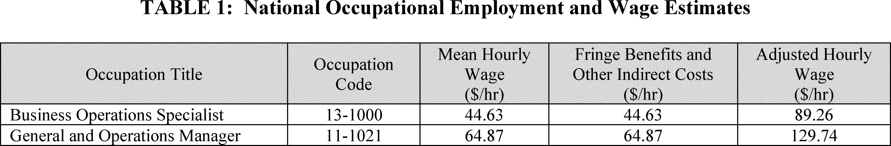
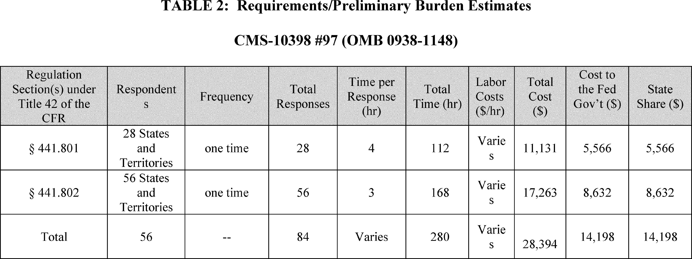

Daily Digest — 2026-08-13
Full observed listing for this day — every item our collectors observed for this publication day, mechanical rules applied, frozen at end of day. This digest is the canonical record.
All items below cite the govinfo package (and granule, where applicable) they summarize. Selection is mechanical; each item states the rule that included it. See the Coverage Statement at the end for a full accounting of what was published, what was summarized, and what was excluded and why.
Day in Review
The Senate agreed to one measure and placed another on its calendar; the House reported one bill. The digest carries 39 measures introduced across the two chambers — 27 in the Senate and 12 in the House.
On the executive and regulatory side, the digest carries 105 Federal Register documents: 13 final rules, 5 proposed rules, and 87 notices. The FAA issued airworthiness directives covering Boeing 767 wing skin inspections, Airbus AS355 and EC 155 helicopters, AS350B2 solenoid valves, and BRP-Rotax engines, and proposed further directives for Rolls-Royce Trent 1000 engines and Airbus A318 through A340 airplanes. The EPA finalized attainment and clean-data determinations for areas in California, Illinois, and Missouri, and proposed approval of a Virginia state implementation plan revision. The Centers for Medicare & Medicaid Services finalized a rule barring federal Medicaid and CHIP payment for sex-rejecting procedures for individuals under 18. The Federal Communications Commission modified broadband label requirements, and the Copyright Office amended its news-website group registration definition. One presidential memorandum and one proclamation appear, alongside 221 agency press releases.
The digest carries 80 appellate opinions, 3 national court opinions, 8 bankruptcy opinions, and 2,012 district court opinions. The Fifth Circuit reversed a felon-in-possession conviction, holding that 18 U.S.C. § 922(g)(1) violates the Second Amendment as applied where the predicate felony is simple drug possession, and vacated a Maritime Administration deepwater port approval for excluding a proposed pipeline from the application area; sitting en banc in Doe v. Planned Parenthood, it dismissed an interlocutory appeal for lack of jurisdiction. The First Circuit vacated a removal order, holding that New Hampshire witness retaliation does not categorically match the federal aggravated felony predicate. The Ninth Circuit held the Foreign Sovereign Immunities Act's arbitration exception supplied jurisdiction over Antrix Corp. The Eleventh Circuit upheld the EPA's approval of phosphogypsum use in road construction. The Court of International Trade enjoined Customs from enforcing interim evasion measures on low-speed vehicles from China.
Composed from the summarized items below and the day's mechanical counts; all specifics are cited in their sections.
1. Congressional Floor Activity
No Congressional Record issue was observed on this day. The Record for a day's proceedings is typically published by govinfo the following morning; it appears in the digest for the day it is observed (how our clocks work).
1.1 Senate
No Senate floor items met the selection thresholds. 0 floor granule(s) are accounted for in the Coverage Statement.
1.2 House of Representatives
No House floor items met the selection thresholds. 0 floor granule(s) are accounted for in the Coverage Statement.
1.3 Recorded Votes
No recorded votes were published in this issue of the Congressional Record.
2. Legislation
Source: Congressional Bills (BILLS), text versions published 2026-08-13 to 2026-08-13.
2.1 Counts by Stage
| Stage (bill text version) | Count |
|---|---|
| Introduced (ih/is) | 39 |
| Reported (rh/rs) | 1 |
| Engrossed (eh/es) | 0 |
| Enrolled (enr) | 0 |
| Other versions | 2 |
| Total bill texts published | 42 |
2.2 Bills Listed by Mechanical Rule
Bills below are listed because they matched at least one listing rule; the matching rule is stated per item. All other bill texts are counted above and accounted for in the Coverage Statement.
No bill texts published in this range matched a listing rule; all 42 are accounted for in the Coverage Statement.
3. Federal Register
Thirteen rules: five FAA airworthiness directives on aircraft and engines; four EPA air quality determinations; Copyright news-website registration, FCC broadband requirements, CMS Medicaid procedures, and NMFS salmon-fishery changes.
Source: Federal Register (FR), issue of 2026-08-13.
3.1 Counts by Document Type
| Document type | Count |
|---|---|
| Rules | 13 |
| Proposed rules | 5 |
| Notices | 87 |
| Presidential documents | 0 |
| Total FR documents | 105 |
3.2 Rules Published
In plain terms Thirteen rules: five FAA airworthiness directives on aircraft and engines; four EPA air quality determinations; Copyright news-website registration, FCC broadband requirements, CMS Medicaid procedures, and NMFS salmon-fishery changes.
DEPARTMENT OF COMMERCE
- Fisheries Off West Coast States; Modification of the West Coast Salmon Fisheries; Inseason Action #23-#24 (2026-16537; 50 CFR Part 660) — NMFS announces two inseason actions for the 2026 portion of the 2025-2026 ocean salmon fisheries. These inseason actions modified the commercial and recreational salmon fisheries in the area from Cape Falcon, Oregon to the United States/Mexico border. Action: Inseason modification of 2025-2026 management measures. Dates: The effective dates for these inseason actions are set out in this document under the heading “Inseason Actions” and the action remained in effect until superseded or modified.
- In plain terms The National Marine Fisheries Service announces two changes to the 2026 commercial and recreational salmon fisheries from Oregon to Mexico.
- Included because: FR-SEL-01 — document type: final rule (all listed)
- Source: FR-2026-08-13 / 2026-16537 (opens in a new tab)
DEPARTMENT OF HEALTH AND HUMAN SERVICES
- Medicaid Program; Prohibition on Federal Medicaid and Children's Health Insurance Program Funding for Sex-Rejecting Procedures Furnished to Children (2026-16508; 42 CFR Parts 441 and 457) — This final rule requires that a State Medicaid plan must provide that the Medicaid agency will not make payment under the plan for sex-rejecting procedures for children under 18, and prohibits the use of Federal Medicaid dollars to fund sex-rejecting procedures for individuals under the age of 18. In addition, this final rule requires that a separate State Children's Health Insurance Program (CHIP) plan must provide that the CHIP agency will not make payment under the plan for sex-rejecting procedures for children under 19, and prohibits the use of Federal CHIP dollars to fund sex-rejecting procedures for individuals under the age of 19. For Medicaid and CHIP beneficiaries who are actively receiving cross-sex hormone therapy, State Medicaid and CHIP agencies may continue to claim Federal Financial Participation for those hormone therapy medications for a period of up to 6 months from the effective date of this final rule. Action: Final rule. Dates: These regulations are effective on October 13, 2026.
- In plain terms Medicaid and CHIP will not fund sex-rejecting procedures for minors, except existing cross-sex hormone therapy can continue for six months.
- Included because: FR-SEL-01 — document type: final rule (all listed)
- Source: FR-2026-08-13 / 2026-16508 (opens in a new tab)

Source graphic 1 of 13 from 2026-16508.
Source graphic 2 of 13 from 2026-16508.- Graphics not rendered here: 11 of 13 — see the source PDF (opens in a new tab).
DEPARTMENT OF TRANSPORTATION
- Airworthiness Directives; The Boeing Company Airplanes (2026-16504; 14 CFR Part 39) — The FAA is superseding Airworthiness Directive (AD) 2018-11-14, which applied to certain The Boeing Company Model 767-300 and -300F series airplanes with certain winglets installed. AD 2018-11-14 required high frequency eddy current (HFEC) inspections for cracking of the lower outboard wing skin and repair or modification if necessary. AD 2018-11-14 also required one of three follow-on actions: Repeating the HFEC inspections; modifying certain internal stringers and oversizing and plugging the existing fastener holes of the lower wing; or modifying the external doubler/tripler and doing repetitive post-modification inspections. This AD was prompted by reports of fatigue cracking in the lower outboard wing skin at the inboard fastener of stringer L-9.5, and the lower outboard wing skin of stringer L-6.5, on airplanes with winglets installed per Supplemental Type Certificate (STC) ST01920SE. This AD was also prompted by a determination that, for certain airplanes, the area of the lower wing skin in the vicinity of the critical inboard end fasteners of installed repair doublers must be inspected. [official summary truncated; see source] Action: Final rule. Dates: This AD is effective September 17, 2026. The Director of the Federal Register approved the incorporation by reference of certain publications listed in this AD as of September 17, 2026. The Director of the Federal Register approved the incorporation by reference of certain other publications listed in this AD as of July 10, 2018 (83 FR 25885, June 5, 2018).
- In plain terms The FAA is updating inspection and repair requirements for cracking in lower outboard wing skin on certain Boeing 767 airplanes with winglets.
- Included because: FR-SEL-01 — document type: final rule (all listed)
- Source: FR-2026-08-13 / 2026-16504 (opens in a new tab)
- Airworthiness Directives; Airbus Helicopters (2026-16505; 14 CFR Part 39) — The FAA is adopting a new airworthiness directive (AD) for all Airbus Helicopters Model AS355E, AS355F, AS355F1, AS355F2, and AS355N helicopters. This AD was prompted by reports of cracks in the legs of the side supports of the tail rotor transmission fan. This AD requires repetitively inspecting the side supports of the tail rotor transmission fan for cracks and, depending on the results, replacing both side supports. The FAA is issuing this AD to address the unsafe condition on these products. Action: Final rule. Dates: This AD is effective September 17, 2026. The Director of the Federal Register approved the incorporation by reference of a certain publication listed in this AD as of September 17, 2026.
- In plain terms The FAA requires inspecting and replacing tail rotor transmission fan side supports on certain Airbus Helicopters to address crack risks.
- Included because: FR-SEL-01 — document type: final rule (all listed)
- Source: FR-2026-08-13 / 2026-16505 (opens in a new tab)
- Airworthiness Directives; Airbus Helicopters (2026-16506; 14 CFR Part 39) — The FAA is adopting a new airworthiness directive (AD) for all Airbus Helicopters Model EC 155 B and EC 155 B1 helicopters. This AD was prompted by a determination that new or more restrictive airworthiness limitations are necessary. This AD requires revising the airworthiness limitations section (ALS) of the existing maintenance manual (MM) or instructions for continued airworthiness (ICA) and the existing approved maintenance or inspection program, as applicable. The FAA is issuing this AD to address the unsafe condition on these products. Action: Final rule. Dates: This AD is effective September 17, 2026. The Director of the Federal Register approved the incorporation by reference of a certain publications listed in this AD as of September 17, 2026.
- In plain terms The FAA requires revising maintenance manuals and inspection programs for certain Airbus EC 155 helicopters due to new airworthiness limits.
- Included because: FR-SEL-01 — document type: final rule (all listed)
- Source: FR-2026-08-13 / 2026-16506 (opens in a new tab)
- Airworthiness Directives; Airbus Helicopters (2026-16507; 14 CFR Part 39) — The FAA is adopting a new airworthiness directive (AD) for certain Airbus Helicopters Model AS350B2 helicopters. This AD was prompted by a report of magnetization on the solenoid valves for the three main servo-controls, the regulator block, and the tail servo-control due to a diode not properly installed in the hydraulic circuit. This AD requires performing a cut-off test of the rear rotor actuator valve and, depending on the results of the test, performing corrective actions. The FAA is issuing this AD to address the unsafe condition on these products. Action: Final rule. Dates: This AD is effective September 17, 2026. The Director of the Federal Register approved the incorporation by reference of a certain publication listed in this AD as of September 17, 2026.
- In plain terms The FAA requires testing a rear rotor actuator valve and taking corrective actions on certain Airbus AS350B2 helicopters due to solenoid magnetization.
- Included because: FR-SEL-01 — document type: final rule (all listed)
- Source: FR-2026-08-13 / 2026-16507 (opens in a new tab)
- Airworthiness Directives; BRP-Rotax GmbH & Co KG (Formerly BRP-Powertrain GMBH & CO KG and Bombardier-Rotax GmbH) Engines and Various Aircraft (2026-16512; 14 CFR Part 39) — The FAA is adopting a new airworthiness directive (AD) for all BRP-Rotax GmbH & Co KG (Rotax) Model 912 F2, 912 F3, 912 F4, 912 iSc2 Sport, 912 iSc3 Sport, 912 S2, 912 S3, 912 S4, 914 F2, 914 F3, and 914 F4 engines; and Model 912 A1, 912 A2, 912 A3, and 912 A4 engines included as part of the type-certificated aircraft type design for various aircraft. This AD was prompted by a report of an oil spray nozzle and certain screws that were not installed on the propeller gearbox. This AD requires a one-time visual inspection of the propeller gearbox to determine if the oil spray nozzle and certain screws are installed and, depending on the results, replacement of the propeller gearbox with a serviceable propeller gearbox. This AD also prohibits the installation of an affected propeller gearbox on any engine unless certain conditions are met. The FAA is issuing this AD to address the unsafe condition on these products. Action: Final rule; request for comments. Dates: This AD is effective August 28, 2026. The Director of the Federal Register approved the incorporation by reference of a certain publication listed in this AD as of August 28, 2026. The FAA must receive comments on this AD by September 28, 2026.
- In plain terms The FAA requires inspecting and replacing propeller gearboxes on certain BRP-Rotax engines to ensure oil spray nozzles and screws are installed.
- Included because: FR-SEL-01 — document type: final rule (all listed)
- Source: FR-2026-08-13 / 2026-16512 (opens in a new tab)
ENVIRONMENTAL PROTECTION AGENCY
- Determination of Attainment by the Attainment Date and Clean Data Determination for the 2012 Annual Fine Particulate Standard; Plumas County, California (2026-16510; 40 CFR Part 52) — The Environmental Protection Agency (EPA) is finalizing our determination that the Portola nonattainment area in Plumas County, California, attained the 2012 annual fine particulate matter (“PM 2.5 ”) national ambient air quality standard (NAAQS or “standard”) by the December 31, 2025 “Serious” area attainment date. This determination is based on ambient air quality monitoring data from 2023 through 2025. We are also finalizing a clean data determination (CDD) based on the 2023 through 2025 data and our evaluation of preliminary air quality monitoring data from 2026. Action: Final rule. Dates: This rule is effective September 14, 2026.
- In plain terms The EPA is finalizing that the Portola area in California met the fine particulate matter standard by December 31, 2025.
- Included because: FR-SEL-01 — document type: final rule (all listed)
- Source: FR-2026-08-13 / 2026-16510 (opens in a new tab)
- Determination of Attainment by the Attainment Date; 1997 Ozone Standards; California; Coachella Valley (2026-16511; 40 CFR Part 52) — The Environmental Protection Agency (EPA) is taking final action to determine that the Riverside County (Coachella Valley), CA 1997 ozone “Extreme” nonattainment area attained the revoked 1997 ozone national ambient air quality standards (NAAQS) by its June 15, 2025 attainment date. This determination is based on quality-assured and certified ambient air quality monitoring data from 2022 through 2024. Action: Final rule. Dates: This rule is effective September 14, 2026.
- In plain terms The EPA is confirming that the Coachella Valley area in California met the revoked 1997 ozone standard by June 15, 2025.
- Included because: FR-SEL-01 — document type: final rule (all listed)
- Source: FR-2026-08-13 / 2026-16511 (opens in a new tab)
- Air Plan Approval; Illinois; Clean Data Determination for the Illinois Portion of the St. Louis Area for the 2015 Ozone Standard (2026-16514; 40 CFR Part 52) — The Environmental Protection Agency (EPA) is determining under the Clean Air Act (CAA) that the Illinois portion of the St. Louis, MO-IL nonattainment area (hereafter also referred to as the “St. Louis area” or “area”) has achieved clean data for the 2015 ozone National Ambient Air Quality Standards (NAAQS or standard). This determination is based upon complete, quality-assured, and certified ambient air monitoring data for the 2023-2025 design value period showing that the Illinois portion of the area achieved attainment of the 2015 ozone NAAQS. This determination also relies on the EPA's concurrence of an exceptional events request submitted by the Illinois Environmental Protection Agency (Illinois EPA) on December 18, 2025, and concurred on by the EPA on January 12, 2026. Therefore, the EPA is taking final agency action on Illinois' exceptional events request. In a separate action, the EPA is finalizing a similar determination for the Missouri portion of the St. Louis area. [official summary truncated; see source] Action: Final rule. Dates: This final rule is effective on September 14, 2026.
- In plain terms The EPA is determining that the Illinois portion of the St. Louis area met the 2015 ozone standard based on 2023-2025 data.
- Included because: FR-SEL-01 — document type: final rule (all listed)
- Source: FR-2026-08-13 / 2026-16514 (opens in a new tab)
- Air Plan Approval; Missouri; Clean Data Determination for the 2015 8-Hour Ozone Standard for the Missouri Portion of the St. Louis Nonattainment Area (2026-16515; 40 CFR Part 52) — The Environmental Protection Agency (EPA) is determining under the Clean Air Act (CAA) that the Missouri portion of the St. Louis, MO-IL bi-state nonattainment area has achieved clean data for the 2015 8-hour ozone National Ambient Air Quality Standard (NAAQS or standard). This determination of clean data is based upon complete, quality-assured, and certified ambient air monitoring data for the 2023-2025 design value period showing that the Missouri portion of the area achieved attainment of the 2015 ozone NAAQS. The 2023-2025 design value relies upon EPA concurrence on a portion of the exceptional events request as submitted by the Missouri Department of Natural Resources (MoDNR) on November 3, 2025, and concurred on by the EPA on January 27, 2026. The EPA is also approving Missouri's November 3, 2025, clean data determination request. This final clean data determination suspends the obligations of the State of Missouri to submit certain nonattainment area planning requirements for as long as the Missouri portion of the St. Louis area continues to attain the 2015 ozone NAAQS. In a separate action, the EPA is finalizing a similar determination for the Illinois portion of the St. [official summary truncated; see source] Action: Final rule. Dates: This final rule is effective on September 14, 2026.
- In plain terms The EPA is approving that the Missouri portion of the St. Louis area met the 2015 ozone standard based on 2023-2025 data.
- Included because: FR-SEL-01 — document type: final rule (all listed)
- Source: FR-2026-08-13 / 2026-16515 (opens in a new tab)
FEDERAL COMMUNICATIONS COMMISSION
- Empowering Broadband Consumers Through Transparency (2026-16503; 47 CFR Part 8) — In this document, the Federal Communications Commission (Commission) eliminates or modifies certain broadband label requirements to ensure that consumers have clear, accurate, and concise information when shopping for broadband plans. Specifically, the Commission enables providers to describe label information in a natural, conversational style over the phone; simplify fee presentation to avoid clutter; remove outdated information from the label; use links or icons at point-of-sale to avoid unwieldy amounts of information that can overwhelm consumers; and eliminate requirements that go beyond our mandate. At the same time, the Commission ensures the labels remain accessible to people with disabilities, and that labels are displayed in the same language(s) used when marketing a service. Action: Final rule. Dates: Effective September 14, 2026, except for instruction 3 (§ 8.1(a)), which is delayed indefinitely. The Commission will publish a document in the Federal Register announcing the effective date.
- In plain terms The FCC is simplifying broadband label requirements so consumers get clear, accurate information while providers can describe labels conversationally.
- Included because: FR-SEL-01 — document type: final rule (all listed)
- Source: FR-2026-08-13 / 2026-16503 (opens in a new tab)
LIBRARY OF CONGRESS
- Group Registration of Updates to a News Website (2026-16465; 37 CFR Part 202) — The U.S. Copyright Office is amending its regulation governing the group registration option for news websites. The final rule amends the definition of a “news website” to clarify the works eligible for this option, as set forth in the May 2026 notice of proposed rulemaking. Action: Final rule. Dates: This rule is effective August 13, 2026.
- In plain terms The Copyright Office is changing rules for how news websites can register copyrighted works as a group.
- Included because: FR-SEL-01 — document type: final rule (all listed)
- Source: FR-2026-08-13 / 2026-16465 (opens in a new tab)
3.3 Proposed Rules Published
In plain terms Five proposed rules: three FAA airworthiness directives on Rolls-Royce and Airbus aircraft; plus FAA Class E airspace for Illinois and EPA air plan for Virginia.
DEPARTMENT OF TRANSPORTATION
- Airworthiness Directives; Rolls-Royce Deutschland Ltd & Co KG Engines (2026-16502; 14 CFR Part 39) — The FAA proposes to supersede Airworthiness Directive (AD) 2025-26-03, which applies to certain Rolls-Royce Deutschland Ltd & Co KG (RRD) Model Trent 1000-A, Trent 1000-AE, Trent 1000-C, Trent 1000-CE, Trent 1000-D, Trent 1000-E, Trent 1000-G, and Trent 1000-H engines. AD 2025-26-03 requires repetitive borescope inspections (BSIs) of the high-pressure compressor (HPC) rear drum cavity and cavities between each HPC rotor disc, and depending on the results of inspection, removal of the engine from service. AD 2025-26-03 also allows an alternative method of complying with the repetitive BSIs if certain actions are accomplished. Since the FAA issued AD 2025-26-03, RRD published updated service material with a revised bolting arrangement at the HPC rotor shaft to high-pressure turbine (HPT) rotor disc interface to address the unsafe condition. This proposed AD would require repetitive BSIs of the HPC rear drum cavity and cavities between each HPC rotor disc, and depending on the results of inspection, removal of the engine from service. [official summary truncated; see source] Action: Notice of proposed rulemaking (NPRM). Dates: The FAA must receive comments on this NPRM by September 28, 2026.
- In plain terms The FAA proposes updating inspection requirements for certain Rolls-Royce engines based on new service material addressing an unsafe condition.
- Included because: FR-SEL-02 — document type: proposed rule (all listed)
- Source: FR-2026-08-13 / 2026-16502 (opens in a new tab)
- Establishment of Class E Airspace; Havana, IL (2026-16539; 14 CFR Part 71) — This action corrects a notice of proposed rulemaking (NPRM) that the FAA published in the Federal Register on August 10, 2026, proposing to establish Class E airspace at Havana, IL. Subsequent to publication, it was discovered that the NPRM was published with the wrong docket number used in two instances. This action corrects those typographic errors. Action: Notice of proposed rulemaking (NPRM); correction; extension of comment period. Dates: The comment period is extended. Comments must be received on or before September 28, 2026.
- In plain terms The FAA is correcting typographic errors in a proposed rule establishing Class E airspace at Havana, Illinois.
- Included because: FR-SEL-02 — document type: proposed rule (all listed)
- Source: FR-2026-08-13 / 2026-16539 (opens in a new tab)
- Airworthiness Directives; Airbus SAS Airplanes (2026-16566; 14 CFR Part 39) — The FAA proposes to adopt a new airworthiness directive (AD) for all Airbus SAS Model A318 series airplanes; Model A319 series airplanes; Model A320 series airplanes; and Model A321-111, -112, -131, -211, -212, -213, -231, -232, -251N, -252N, -253N, -271N, -272N, -251NX, -252NX, -253NX, -271NX, and -272NX airplanes. This proposed AD was prompted by reports of a certain nose landing gear (NLG) sliding tube having widespread overheat damage and multiple cracks on the base metal during shop visits. This proposed AD would require a special detailed inspection (SDI) of the affected NLG sliding tube and replacement, as applicable. This proposed AD would also prohibit the installation of affected parts. The FAA is proposing this AD to address the unsafe condition on these products. Action: Notice of proposed rulemaking (NPRM). Dates: The FAA must receive comments on this proposed AD by September 28, 2026.
- In plain terms The FAA proposes requiring inspection and replacement of nose landing gear tubes on certain Airbus airplanes showing overheat damage and cracks.
- Included because: FR-SEL-02 — document type: proposed rule (all listed)
- Source: FR-2026-08-13 / 2026-16566 (opens in a new tab)
- Airworthiness Directives; Airbus SAS Airplanes (2026-16567; 14 CFR Part 39) — The FAA proposes to adopt a new airworthiness directive (AD) for all Airbus SAS Model A330-243, A330-243F, A330-341, A330-342, A330-343, A330-841, and A330-941 airplanes; and Model A340-211, A340-212, A340-213, A340-311, A340-312, A340-313, A340-541, and A340-642 airplanes. This proposed AD was prompted by reports of leaks on closed fuel low pressure shut-off valves (LPSOVs). This proposed AD would require repetitive leak checks of certain fuel LPSOVs and replacement of an affected part if any discrepancy is detected. This proposed AD would also allow the installation of an affected part under certain conditions. The FAA is proposing this AD to address the unsafe condition on these products. Action: Notice of proposed rulemaking (NPRM). Dates: The FAA must receive comments on this proposed AD by September 28, 2026.
- In plain terms The FAA proposes requiring leak checks and replacement of fuel low pressure shut-off valves on certain Airbus A330 and A340 airplanes.
- Included because: FR-SEL-02 — document type: proposed rule (all listed)
- Source: FR-2026-08-13 / 2026-16567 (opens in a new tab)
ENVIRONMENTAL PROTECTION AGENCY
- Air Plan Approval; Commonwealth of Virginia; Transfer of Authority and Requests for Certain Public Hearings on Air Permits (2026-16564; 40 CFR Part 52) — The Environmental Protection Agency (EPA) is proposing to approve a state implementation plan (SIP) revision request submitted by Virginia Department of Environmental Quality (VADEQ) on behalf of the Commonwealth of Virginia. The SIP revisions intend to make some sections of Virginia regulation Revision D22 that became effective on November 23, 2022 federally enforceable. The revisions limit the authority of the Virginia State Air Pollution Control Board (Board) to the issuance of regulations, and transfer the board's existing authority to issue permits, orders, and variances to VADEQ. Additionally, the revisions establish procedures for public comment on pending controversial permits and regulatory changes, and amend certain other procedural requirements related to VADEQ's issuance of permits. This action is being taken under the Clean Air Act (CAA). Action: Proposed rule. Dates: Written comments must be received on or before September 14, 2026.
- In plain terms The EPA proposes approving Virginia's plan to make air pollution control regulations federally enforceable and transfer permit authority to the state agency.
- Included because: FR-SEL-02 — document type: proposed rule (all listed)
- Source: FR-2026-08-13 / 2026-16564 (opens in a new tab)
3.4 Notices and Presidential Documents
Notices are summarized only when they match a listing rule; all are counted in 3.1 and in the Coverage Statement. Presidential documents in the FR are always listed.
No notices or presidential documents matched a listing rule.
4. Enacted Laws
Source: Public and Private Laws (PLAW) published 2026-08-13.
No laws were published in this range.
5. Judicial Activity
Eighty-three judicial decisions span criminal appeals involving drug trafficking, child exploitation, and weapons offenses; immigration removals and habeas cases; civil rights claims; bankruptcy; RICO fraud; and trade disputes.
Source: United States Courts Opinions (USCOURTS): opinions observed 2026-08-13 by our collector; each opinion states its own issue date beside its listing (how our clocks work).
Completeness disclosure (standing): USCOURTS carries opinions from approximately 140 participating appellate, district, bankruptcy, and national federal courts. Unlike the Congressional Record and the Federal Register, which are the complete official record of their branches, USCOURTS is participation-based and is NOT the complete federal judicial record. Courts post opinions with delay — typically over several days — so a day's digest carries the opinions that became available that day, whatever date each was issued.
5.1 Appellate and National Court Opinions
In plain terms Eighty-three judicial decisions span criminal appeals involving drug trafficking, child exploitation, and weapons offenses; immigration removals and habeas cases; civil rights claims; bankruptcy; RICO fraud; and trade disputes.
Appellate and national court opinions are summarized; district and bankruptcy opinions are counted in 5.2 and in the Coverage Statement.
United States Court of Appeals for the District of Columbia Circuit
- Azael Perales v. State of California, et al (No. 26-07019; filed 2026-08-12) — The D.C. Circuit affirmed dismissal of Azael Perales' complaint, holding that the federal district court lacked jurisdiction to review actions taken by California state agencies. The court noted that because Perales did not name the United States as a defendant, he could not obtain federal relief on his claims.
- In plain terms A federal court dismissed the case because it lacks authority to review actions by California state agencies when the plaintiff did not sue the federal government.
- Included because: USCOURTS-SEL-01 — appellate court opinion (all listed) (document dated 2026-08-12)
- Source: USCOURTS-caDC-26-07019 / USCOURTS-caDC-26-07019-0 (opens in a new tab)
United States Court of Appeals for the Eighth Circuit
- United States v. Michael Brunson (No. 24-02356; filed 2026-08-10) — The Eighth Circuit affirmed a drug conviction and life sentence for Michael Brunson, rejecting his challenges to jury instructions, evidentiary rulings, sentencing guidelines, and allegations of prosecutorial misconduct.
- In plain terms A court upheld Michael Brunson's drug conviction and life sentence, rejecting his challenges to jury instructions, evidence rulings, sentencing guidelines, and prosecutorial misconduct claims.
- Included because: USCOURTS-SEL-01 — appellate court opinion (all listed) (document dated 2026-08-10)
- Source: USCOURTS-ca8-24-02356 / USCOURTS-ca8-24-02356-0 (opens in a new tab)
- United States v. Malachi Handley (No. 24-02976; filed 2026-08-11) — The Eighth Circuit issued an opinion and entered judgment in criminal appellate case 24-2976, United States v. Malachi Handley, with instructions regarding post-submission procedures and the 14-day deadline for petitions for rehearing.
- In plain terms The Eighth Circuit issued a judgment in United States v. Malachi Handley with a 14-day deadline for filing petitions for rehearing.
- Included because: USCOURTS-SEL-01 — appellate court opinion (all listed) (document dated 2026-08-11)
- Source: USCOURTS-ca8-24-02976 / USCOURTS-ca8-24-02976-0 (opens in a new tab)
- United States v. Lloyd Elk (No. 24-03230; filed 2026-08-11) — The Eighth Circuit issued an opinion and entered judgment in criminal appellate case 24-3230, United States v. Lloyd Elk, with instructions regarding post-submission procedures and the 14-day deadline for petitions for rehearing.
- In plain terms The Eighth Circuit issued a judgment in United States v. Lloyd Elk with a 14-day deadline for filing petitions for rehearing.
- Included because: USCOURTS-SEL-01 — appellate court opinion (all listed) (document dated 2026-08-11)
- Source: USCOURTS-ca8-24-03230 / USCOURTS-ca8-24-03230-0 (opens in a new tab)
- Justin Morales v. United States (No. 25-01354; filed 2026-08-10) — The Eighth Circuit issued an opinion in Justin Morales v. United States and entered judgment accordingly. Counsel must file any petitions for rehearing or rehearing en banc within 45 days of the judgment date.
- In plain terms The court issued its opinion in Justin Morales v. United States and any requests for rehearing must be filed within 45 days of the judgment.
- Included because: USCOURTS-SEL-01 — appellate court opinion (all listed) (document dated 2026-08-10)
- Source: USCOURTS-ca8-25-01354 / USCOURTS-ca8-25-01354-0 (opens in a new tab)
- Nate Maniktala, et al v. CIR (No. 25-01366; filed 2026-08-11) — The Eighth Circuit issued an opinion and entered judgment in tax appellate case 25-1366, Nate Maniktala, et al v. CIR, with instructions regarding post-submission procedures and the 45-day deadline for petitions for rehearing.
- In plain terms The Eighth Circuit issued a judgment in Nate Maniktala, et al v. CIR with a 45-day deadline for filing petitions for rehearing.
- Included because: USCOURTS-SEL-01 — appellate court opinion (all listed) (document dated 2026-08-11)
- Source: USCOURTS-ca8-25-01366 / USCOURTS-ca8-25-01366-0 (opens in a new tab)
- United States v. Xavier Murry (No. 25-01410; filed 2026-08-12) — The Eighth Circuit Court of Appeals issued an opinion in United States v. Xavier Murry and entered judgment accordingly; the notification sets deadlines for any petitions for rehearing or rehearing en banc.
- In plain terms An appeals court issued its decision in United States v. Xavier Murry with deadlines for requesting rehearing.
- Included because: USCOURTS-SEL-01 — appellate court opinion (all listed) (document dated 2026-08-12)
- Source: USCOURTS-ca8-25-01410 / USCOURTS-ca8-25-01410-0 (opens in a new tab)
- Jane Doe v. Anoka County, et al (No. 25-01568; filed 2026-08-10) — The Eighth Circuit Court of Appeals issued an opinion and entered judgment in Jane Doe v. Anoka County, et al. Petitions for rehearing or rehearing en banc must be received in the clerk's office within 14 days of the judgment entry date.
- In plain terms The Eighth Circuit issued a judgment in Jane Doe v. Anoka County with a 14-day deadline for filing petitions for rehearing.
- Included because: USCOURTS-SEL-01 — appellate court opinion (all listed) (document dated 2026-08-10)
- Source: USCOURTS-ca8-25-01568 / USCOURTS-ca8-25-01568-0 (opens in a new tab)
- Anna Chernyy v. Monty Roesler, et al (No. 25-01574; filed 2026-08-11) — The Eighth Circuit Court of Appeals issued an opinion and entered judgment in Anna Chernyy v. Monty Roesler, et al. Petitions for rehearing or rehearing en banc must be received in the clerk's office within 14 days of the judgment entry date.
- In plain terms The Eighth Circuit issued a judgment in Anna Chernyy v. Monty Roesler, et al with a 14-day deadline for filing petitions for rehearing.
- Included because: USCOURTS-SEL-01 — appellate court opinion (all listed) (document dated 2026-08-11)
- Source: USCOURTS-ca8-25-01574 / USCOURTS-ca8-25-01574-0 (opens in a new tab)
- Anna Chernyy v. Monty Roesler, et al (No. 25-01574; filed 2026-08-11) — The Eighth Circuit Court of Appeals issued a corrected opinion in Anna Chernyy v. Monty Roesler, et al on August 11, 2026. All counsel were notified to replace their original opinion with the corrected version.
- In plain terms The Eighth Circuit issued a corrected opinion in Anna Chernyy v. Monty Roesler, et al on August 11, 2026.
- Included because: USCOURTS-SEL-01 — appellate court opinion (all listed) (document dated 2026-08-11)
- Source: USCOURTS-ca8-25-01574 / USCOURTS-ca8-25-01574-1 (opens in a new tab)
- Berkley National Insurance Co. v. Broan-Nutone, LLC (No. 25-01885; filed 2026-08-11) — The Eighth Circuit Court of Appeals issued an opinion and entered judgment in Berkley National Insurance Co. v. Broan-Nutone, LLC. The court notified counsel that petitions for rehearing must be filed within 14 days of the judgment entry date, and must be filed electronically in the CM/ECF system.
- In plain terms The Eighth Circuit issued a judgment in Berkley National Insurance Co. v. Broan-Nutone, LLC, and lawyers have 14 days to ask the court to review the case again electronically.
- Included because: USCOURTS-SEL-01 — appellate court opinion (all listed) (document dated 2026-08-11)
- Source: USCOURTS-ca8-25-01885 / USCOURTS-ca8-25-01885-0 (opens in a new tab)
- United States v. David Walker (No. 25-02029; filed 2026-08-12) — The Eighth Circuit Court of Appeals issued an opinion in United States v. David Walker. The notice sets forth procedural requirements for filing petitions for rehearing within 14 days of judgment entry.
- In plain terms The Eighth Circuit Court of Appeals issued a ruling in United States v. David Walker; parties have 14 days from when the judgment is issued to request reconsideration.
- Included because: USCOURTS-SEL-01 — appellate court opinion (all listed) (document dated 2026-08-12)
- Source: USCOURTS-ca8-25-02029 / USCOURTS-ca8-25-02029-0 (opens in a new tab)
- United States v. Stephon Verges (No. 25-02033; filed 2026-08-11) — The Eighth Circuit Court of Appeals issued an opinion and entered judgment in United States v. Stephon Verges. Petitions for rehearing or rehearing en banc must be received in the clerk's office within 14 days of the judgment entry date.
- In plain terms The Eighth Circuit issued a judgment in United States v. Stephon Verges with a 14-day deadline for filing petitions for rehearing.
- Included because: USCOURTS-SEL-01 — appellate court opinion (all listed) (document dated 2026-08-11)
- Source: USCOURTS-ca8-25-02033 / USCOURTS-ca8-25-02033-0 (opens in a new tab)
- United States v. Alexzandra Blanco (No. 25-02053; filed 2026-08-10) — The Eighth Circuit Court of Appeals issued an opinion and entered judgment in United States v. Alexzandra Blanco. Petitions for rehearing or rehearing en banc must be received in the clerk's office within 14 days of the judgment entry date.
- In plain terms The Eighth Circuit issued a judgment in United States v. Alexzandra Blanco with a 14-day deadline for filing petitions for rehearing.
- Included because: USCOURTS-SEL-01 — appellate court opinion (all listed) (document dated 2026-08-10)
- Source: USCOURTS-ca8-25-02053 / USCOURTS-ca8-25-02053-0 (opens in a new tab)
- Ross Christensen v. Union Pacific Railroad Co. (No. 25-02173; filed 2026-08-11) — The Eighth Circuit Court of Appeals issued an opinion and entered judgment in Ross Christensen v. Union Pacific Railroad Co. Petitions for rehearing or rehearing en banc must be received in the clerk's office within 14 days of the judgment entry date.
- In plain terms The Eighth Circuit issued a judgment in Ross Christensen v. Union Pacific Railroad Co. with a 14-day deadline for filing petitions for rehearing.
- Included because: USCOURTS-SEL-01 — appellate court opinion (all listed) (document dated 2026-08-11)
- Source: USCOURTS-ca8-25-02173 / USCOURTS-ca8-25-02173-0 (opens in a new tab)
- United States v. Marcus Nails (No. 25-02505; filed 2026-08-11) — The Eighth Circuit issued an opinion in United States v. Marcus Nails and entered judgment on August 11, 2026. Petitions for rehearing must be filed within 14 days of the judgment entry date.
- In plain terms The Eighth Circuit issued a judgment in United States v. Marcus Nails on August 11, 2026 with a 14-day deadline for filing petitions for rehearing.
- Included because: USCOURTS-SEL-01 — appellate court opinion (all listed) (document dated 2026-08-11)
- Source: USCOURTS-ca8-25-02505 / USCOURTS-ca8-25-02505-0 (opens in a new tab)
- Boechler, P.C. v. CIR (No. 25-02620; filed 2026-08-10) — The Eighth Circuit issued an opinion in Boechler, P.C. v. CIR and entered judgment on August 10, 2026. Petitions for rehearing must be filed within 45 days of the judgment entry date.
- In plain terms The Eighth Circuit issued a judgment in Boechler, P.C. v. CIR on August 10, 2026 with a 45-day deadline for filing petitions for rehearing.
- Included because: USCOURTS-SEL-01 — appellate court opinion (all listed) (document dated 2026-08-10)
- Source: USCOURTS-ca8-25-02620 / USCOURTS-ca8-25-02620-0 (opens in a new tab)
- Deborah Tobacco v. Avera McKennan (No. 25-02881; filed 2026-08-10) — The Eighth Circuit issued an opinion in Deborah Tobacco v. Avera McKennan and entered judgment accordingly. Counsel must file any petitions for rehearing or rehearing en banc within 14 days of the judgment date.
- In plain terms The court issued its opinion in Deborah Tobacco v. Avera McKennan and any requests for rehearing must be filed within 14 days of the judgment.
- Included because: USCOURTS-SEL-01 — appellate court opinion (all listed) (document dated 2026-08-10)
- Source: USCOURTS-ca8-25-02881 / USCOURTS-ca8-25-02881-0 (opens in a new tab)
- United States v. Amir Mulamba (No. 25-02895; filed 2026-08-12) — The Eighth Circuit Court of Appeals affirmed the district court's denial of a motion to suppress evidence in United States v. Amir Mulamba, who was charged with production of child sexual abuse material after law enforcement obtained and searched his phone.
- In plain terms An appeals court upheld the lower court's refusal to exclude evidence obtained from a phone search in a case against a defendant charged with producing child sexual abuse material.
- Included because: USCOURTS-SEL-01 — appellate court opinion (all listed) (document dated 2026-08-12)
- Source: USCOURTS-ca8-25-02895 / USCOURTS-ca8-25-02895-0 (opens in a new tab)
- Dakotans for Health, et al v. Monae Johnson (No. 25-02940; filed 2026-08-11) — The Eighth Circuit Court of Appeals issued an opinion and entered judgment in Dakotans for Health, et al v. Monae Johnson. The court notified counsel that petitions for rehearing must be filed within 14 days of the judgment entry date, and must be filed electronically in the CM/ECF system.
- In plain terms The Eighth Circuit issued a judgment in Dakotans for Health, et al v. Monae Johnson, and lawyers have 14 days to ask the court to review the case again electronically.
- Included because: USCOURTS-SEL-01 — appellate court opinion (all listed) (document dated 2026-08-11)
- Source: USCOURTS-ca8-25-02940 / USCOURTS-ca8-25-02940-0 (opens in a new tab)
- Shamrock Hills, LLC v. State of Iowa, et al (No. 25-02991; filed 2026-08-12) — The Eighth Circuit Court of Appeals issued an opinion and entered judgment in Shamrock Hills, LLC v. State of Iowa, et al. Petitions for rehearing or rehearing en banc must be filed with the court within 14 days of the judgment entry date.
- In plain terms An appeals court issued its decision in Shamrock Hills, LLC v. State of Iowa with a 14-day deadline to request rehearing.
- Included because: USCOURTS-SEL-01 — appellate court opinion (all listed) (document dated 2026-08-12)
- Source: USCOURTS-ca8-25-02991 / USCOURTS-ca8-25-02991-0 (opens in a new tab)
- United States v. Andre McCoy (No. 25-03107; filed 2026-08-12) — The Eighth Circuit Court of Appeals issued an opinion and entered judgment in United States v. Andre McCoy. Petitions for rehearing or rehearing en banc must be filed with the court within 14 days of the judgment entry date.
- In plain terms An appeals court issued its decision in United States v. Andre McCoy with a 14-day deadline to request rehearing.
- Included because: USCOURTS-SEL-01 — appellate court opinion (all listed) (document dated 2026-08-12)
- Source: USCOURTS-ca8-25-03107 / USCOURTS-ca8-25-03107-0 (opens in a new tab)
- Ezequiel Escalante v. Todd Blanche (No. 25-03120; filed 2026-08-10) — The Eighth Circuit issued an opinion in Ezequiel Escalante v. Todd Blanche and entered judgment accordingly. Counsel must file any petitions for rehearing or rehearing en banc within 45 days of the judgment date.
- In plain terms The court issued its opinion in Ezequiel Escalante v. Todd Blanche and any requests for rehearing must be filed within 45 days of the judgment.
- Included because: USCOURTS-SEL-01 — appellate court opinion (all listed) (document dated 2026-08-10)
- Source: USCOURTS-ca8-25-03120 / USCOURTS-ca8-25-03120-0 (opens in a new tab)
- Elizabeth Martin v. Chief Disciplinary Counsel of Missouri, et al (No. 25-03230; filed 2026-08-10) — The Eighth Circuit issued an opinion in Elizabeth Martin v. Chief Disciplinary Counsel of Missouri, et al and entered judgment on August 10, 2026. Petitions for rehearing must be filed within 14 days of the judgment entry date.
- In plain terms The Eighth Circuit issued a judgment in Elizabeth Martin v. Chief Disciplinary Counsel of Missouri, et al on August 10, 2026 with a 14-day deadline for filing petitions for rehearing.
- Included because: USCOURTS-SEL-01 — appellate court opinion (all listed) (document dated 2026-08-10)
- Source: USCOURTS-ca8-25-03230 / USCOURTS-ca8-25-03230-0 (opens in a new tab)
- Kanyon Holdings, LLC v. Kevin Dandurand (No. 25-06010; filed 2026-08-10) — The Bankruptcy Appellate Panel for the Eighth Circuit issued an opinion in Kanyon Holdings, LLC v. Kevin Dandurand and entered judgment in accordance with the opinion.
- In plain terms A bankruptcy appellate panel issued its opinion in Kanyon Holdings, LLC v. Kevin Dandurand and entered judgment accordingly.
- Included because: USCOURTS-SEL-01 — appellate court opinion (all listed) (document dated 2026-08-10)
- Source: USCOURTS-ca8-25-06010 / USCOURTS-ca8-25-06010-0 (opens in a new tab)
- United States v. Levi Miller (No. 26-01177; filed 2026-08-12) — The Eighth Circuit Court of Appeals issued an opinion and entered judgment in United States v. Levi Miller. Petitions for rehearing or rehearing en banc must be filed with the court within 14 days of the judgment entry date.
- In plain terms An appeals court issued its decision in United States v. Levi Miller with a 14-day deadline to request rehearing.
- Included because: USCOURTS-SEL-01 — appellate court opinion (all listed) (document dated 2026-08-12)
- Source: USCOURTS-ca8-26-01177 / USCOURTS-ca8-26-01177-0 (opens in a new tab)
- United States v. Colton Rickels (No. 26-01434; filed 2026-08-11) — The Eighth Circuit affirmed Colton Rickels's conviction for failing to update his sex-offender registration and upheld his within-Guidelines sentence imposed consecutively to another sentence. The court found no substantive unreasonableness in the sentencing.
- In plain terms The Eighth Circuit affirmed Colton Rickels's conviction for failing to update his sex-offender registration and upheld his consecutive sentence.
- Included because: USCOURTS-SEL-01 — appellate court opinion (all listed) (document dated 2026-08-11)
- Source: USCOURTS-ca8-26-01434 / USCOURTS-ca8-26-01434-0 (opens in a new tab)
- United States v. James Dyett (No. 26-01474; filed 2026-08-11) — The Eighth Circuit affirmed the district court's denial of a minor-role reduction in James Dyett's money laundering case. An appeal waiver prevented review of additional claims regarding the sentence and search condition.
- In plain terms The Eighth Circuit upheld the lower court's denial of a minor-role reduction in James Dyett's money laundering case.
- Included because: USCOURTS-SEL-01 — appellate court opinion (all listed) (document dated 2026-08-11)
- Source: USCOURTS-ca8-26-01474 / USCOURTS-ca8-26-01474-0 (opens in a new tab)
United States Court of Appeals for the Eleventh Circuit
- Gregory Myers v. Undine George (No. 24-13257; filed 2026-08-12) — The Eleventh Circuit affirmed that a bankruptcy court retained jurisdiction to award attorney's fees as administrative expenses from undisbursed Chapter 13 plan payments after dismissing the debtor's case as filed in bad faith. The court held that the trustee properly deducted the attorney's fees before refunding remaining funds to the debtor.
- In plain terms A bankruptcy court properly awarded attorney's fees to be paid from leftover Chapter 13 plan payments after dismissing the debtor's case filed in bad faith.
- Included because: USCOURTS-SEL-01 — appellate court opinion (all listed) (document dated 2026-08-12)
- Source: USCOURTS-ca11-24-13257 / USCOURTS-ca11-24-13257-0 (opens in a new tab)
- Center for Biological Diversity v. U.S. Environmental Protection Agency, et al (No. 25-10515; filed 2026-08-12) — The Eleventh Circuit upheld the EPA's approval of a proposal to use phosphogypsum, a radioactive byproduct of phosphate fertilizer production, in road construction at a privately owned facility in Florida. The court found that the EPA's technical methodology and risk assessment were well-supported and did not violate Clean Air Act radionuclide emission standards.
- In plain terms A court upheld the EPA's approval to use a radioactive fertilizer byproduct in road construction, finding the EPA's risk assessment complied with Clean Air Act standards.
- Included because: USCOURTS-SEL-01 — appellate court opinion (all listed) (document dated 2026-08-12)
- Source: USCOURTS-ca11-25-10515 / USCOURTS-ca11-25-10515-0 (opens in a new tab)
- USA v. Hantson Clark (No. 25-11925; filed 2026-08-12) — The Eleventh Circuit affirmed the conviction of Hantson Clark for conspiracy to distribute methamphetamine and fentanyl, distribution of those substances, and using a communication facility to facilitate drug trafficking. The court found that hearsay evidence was properly admitted, the trial court did not abuse its discretion in its evidentiary rulings, and the government presented sufficient evidence to support the convictions.
- In plain terms A court affirmed the conviction of Hantson Clark for conspiring to distribute methamphetamine and fentanyl, distributing those drugs, and using communications to facilitate the trafficking.
- Included because: USCOURTS-SEL-01 — appellate court opinion (all listed) (document dated 2026-08-12)
- Source: USCOURTS-ca11-25-11925 / USCOURTS-ca11-25-11925-0 (opens in a new tab)
- James Douse v. Jesse Tilden, et al (No. 25-12816; filed 2026-08-12) — The Eleventh Circuit affirmed the dismissal of the pro se plaintiff's Fair Housing Act complaint and the trial court's designation of him as a vexatious litigant subject to frivolity screening. The court found that the amended complaint was a shotgun pleading replete with conclusory and immaterial allegations lacking clear connection to specific causes of action.
- In plain terms A court affirmed dismissal of a Fair Housing Act complaint for being poorly written with conclusory claims unconnected to specific legal violations.
- Included because: USCOURTS-SEL-01 — appellate court opinion (all listed) (document dated 2026-08-12)
- Source: USCOURTS-ca11-25-12816 / USCOURTS-ca11-25-12816-0 (opens in a new tab)
- USA v. Robert Clarke (No. 25-13189; filed 2026-08-12) — Robert Clarke appealed a 24-month prison sentence imposed after revocation of his supervised release, arguing the sentence exceeded advisory guidelines and that the district court failed to adequately consider imposing a lifetime supervised release term. The Eleventh Circuit affirmed, finding the district court properly calculated the guideline range, adequately explained its reasons for exceeding it based on Clarke's violations, and properly considered the applicable sentencing factors.
- In plain terms A court affirmed a 24-month prison sentence imposed after Robert Clarke's supervised release was revoked for violating release conditions.
- Included because: USCOURTS-SEL-01 — appellate court opinion (all listed) (document dated 2026-08-12)
- Source: USCOURTS-ca11-25-13189 / USCOURTS-ca11-25-13189-0 (opens in a new tab)
United States Court of Appeals for the Fifth Circuit
- Doe v. Planned Parenthood (No. 23-11184; filed 2025-02-26) — A relator sued Planned Parenthood under the False Claims Act alleging the organization helped affiliates continue Medicaid claims after state termination. The district court denied summary judgment on implied-false-certification and conspiracy claims, rejecting attorney immunity. A panel reversed, holding that Planned Parenthood is entitled to immunity for the acts of its attorneys.
- In plain terms A court panel held that Planned Parenthood has attorney immunity for actions of its lawyers in a False Claims Act lawsuit.
- Included because: USCOURTS-SEL-01 — appellate court opinion (all listed) (document dated 2026-08-12)
- Source: USCOURTS-ca5-23-11184 / USCOURTS-ca5-23-11184-0 (opens in a new tab)
- Doe v. Planned Parenthood (No. 23-11184; filed 2026-08-12) — The en banc court reconsidered and held it lacks jurisdiction over the interlocutory appeal because attorney immunity under current Texas and Louisiana law provides a defense to liability rather than immunity from suit, and because resolving the immunity issue would not conclusively determine a separable legal question. The court dismissed the appeal.
- In plain terms A full court panel dismissed the appeal, finding that attorney immunity is a legal defense rather than immunity from being sued at all.
- Included because: USCOURTS-SEL-01 — appellate court opinion (all listed) (document dated 2026-08-12)
- Source: USCOURTS-ca5-23-11184 / USCOURTS-ca5-23-11184-1 (opens in a new tab)
- USA v. Brann (No. 24-50378; filed 2026-08-12) — A defendant pleaded guilty to sexual exploitation of a child and agreed to pay $100,000 in restitution, waiving his right to appeal the restitution order. He appealed, challenging the restitution amount as exceeding the statutory maximum under 18 U.S.C. § 2259 for lack of sufficient evidence of the victim's losses. The court affirmed the restitution award.
- In plain terms A court affirmed a $100,000 restitution award for child sexual exploitation, rejecting the defendant's argument that the amount was excessive.
- Included because: USCOURTS-SEL-01 — appellate court opinion (all listed) (document dated 2026-08-12)
- Source: USCOURTS-ca5-24-50378 / USCOURTS-ca5-24-50378-0 (opens in a new tab)
- K Alain v. CIR (No. 24-60240; filed 2026-08-12) — A limited liability limited partnership challenged the IRS's determination that its limited partners did not qualify for the self-employment tax exception under 26 U.S.C. § 1402(a)(13). The court held that the original public meaning of "limited partner" is a partner who plays no significant role in managing or running a business, and vacated and remanded for the Commissioner to reconsider whether the partners met that definition.
- In plain terms A court overturned an IRS decision about self-employment taxes and returned it for reconsideration, holding that limited partners must play no significant management role.
- Included because: USCOURTS-SEL-01 — appellate court opinion (all listed) (document dated 2026-08-12)
- Source: USCOURTS-ca5-24-60240 / USCOURTS-ca5-24-60240-0 (opens in a new tab)
- USA v. Wilson (No. 25-11270; filed 2026-08-12) — Appointed counsel moved to withdraw from representing the defendant in an appeal and filed a brief under Anders v. California, concluding the appeal presents no nonfrivolous issues for review. The court granted counsel's motion to withdraw and dismissed the appeal.
- In plain terms A court granted appointed counsel's motion to withdraw and dismissed the appeal after finding no valid issues to review.
- Included because: USCOURTS-SEL-01 — appellate court opinion (all listed) (document dated 2026-08-12)
- Source: USCOURTS-ca5-25-11270 / USCOURTS-ca5-25-11270-0 (opens in a new tab)
- USA v. Bell (No. 25-30522; filed 2026-08-12) — Appointed counsel moved to withdraw from representing the defendant in an appeal and filed a brief under Anders v. California, concluding the appeal presents no nonfrivolous issues for review. The defendant filed a response. The court granted counsel's motion to withdraw and dismissed the appeal.
- In plain terms A court granted appointed counsel's motion to withdraw and dismissed the appeal after finding no valid issues to review.
- Included because: USCOURTS-SEL-01 — appellate court opinion (all listed) (document dated 2026-08-12)
- Source: USCOURTS-ca5-25-30522 / USCOURTS-ca5-25-30522-0 (opens in a new tab)
- USA v. Gamez (No. 25-40552; filed 2026-08-12) — Daniel Gamez was convicted of one count of possession of a firearm after a felony conviction and sentenced to 92 months of imprisonment. He appealed the district court's application of two sentencing guideline adjustments. The Fifth Circuit affirmed the judgment.
- In plain terms A court affirmed Daniel Gamez's 92-month sentence for possessing a firearm as a felon.
- Included because: USCOURTS-SEL-01 — appellate court opinion (all listed) (document dated 2026-08-12)
- Source: USCOURTS-ca5-25-40552 / USCOURTS-ca5-25-40552-0 (opens in a new tab)
- USA v. Rodriguez-Hernandez (No. 25-40821; filed 2026-08-12) — Fernando Rodriguez-Hernandez appealed his sentence for illegal reentry, arguing that certain conditions of supervised release were not adequately pronounced at sentencing. The Fifth Circuit found he forfeited this argument by failing to brief it and affirmed the sentence.
- In plain terms A court affirmed Fernando Rodriguez-Hernandez's sentence for illegally reentering the country after he failed to properly argue his appeal.
- Included because: USCOURTS-SEL-01 — appellate court opinion (all listed) (document dated 2026-08-12)
- Source: USCOURTS-ca5-25-40821 / USCOURTS-ca5-25-40821-0 (opens in a new tab)
- USA v. Patino (No. 25-50039; filed 2026-08-12) — San Ynes Patino was convicted of possession of a firearm following a felony conviction for simple drug possession and challenged the conviction as violating the Second Amendment as applied to him. The Fifth Circuit reversed his conviction, holding that 18 U.S.C. § 922(g)(1) violates the Second Amendment when applied to defendants whose predicate felony is simple drug possession.
- In plain terms A court reversed San Ynes Patino's conviction for gun possession as a felon, holding that the federal law violates the Second Amendment when applied to people convicted only of simple drug possession.
- Included because: USCOURTS-SEL-01 — appellate court opinion (all listed) (document dated 2026-08-12)
- Source: USCOURTS-ca5-25-50039 / USCOURTS-ca5-25-50039-0 (opens in a new tab)
- La Union del Pueblo Entero v. Abbott (No. 25-50246; filed 2026-08-12) — Multiple organizations challenged nine provisions of Texas Senate Bill 1 concerning mail-in voting identification requirements, curative ballot procedures, and voter assistance regulations under the Americans with Disabilities Act and the Rehabilitation Act of 1973. The Fifth Circuit reviewed the district court's injunction of these provisions and analyzed whether plaintiff organizations had established standing through individual members' alleged injuries.
- In plain terms A court analyzed whether organizations had legal standing to challenge nine Texas voting law provisions regarding mail-in voting requirements and voter assistance.
- Included because: USCOURTS-SEL-01 — appellate court opinion (all listed) (document dated 2026-08-12)
- Source: USCOURTS-ca5-25-50246 / USCOURTS-ca5-25-50246-0 (opens in a new tab)
- USA v. Diego-Mateo (No. 25-50812; filed 2026-08-12) — Miguel Diego-Mateo pleaded guilty to illegal reentry and was sentenced to thirty months of imprisonment. He argued on appeal that his sentence was unconstitutional because it was enhanced based on a prior felony conviction not alleged in the indictment or mentioned in his guilty plea. The Fifth Circuit granted summary affirmance, finding the argument foreclosed by prior precedent.
- In plain terms A court affirmed Miguel Diego-Mateo's 30-month sentence for illegally reentering the country, finding his constitutional argument was already decided by prior cases.
- Included because: USCOURTS-SEL-01 — appellate court opinion (all listed) (document dated 2026-08-12)
- Source: USCOURTS-ca5-25-50812 / USCOURTS-ca5-25-50812-0 (opens in a new tab)
- Citizens for Clean Air v. TRAN (No. 25-60202; filed 2026-08-12) — Citizens for Clean Air challenged the Maritime Administration's approval of an application to construct a deepwater port off Texas, arguing the applicant's proposed pipeline should have been included in its application area under the Deepwater Port Act of 1974. The Fifth Circuit held that the statute requires application areas to encompass deepwater port components including pipelines, and vacated the approval decision for further proceedings.
- In plain terms A court ruled that deepwater port applications must include proposed pipelines and returned an approval decision for reconsideration.
- Included because: USCOURTS-SEL-01 — appellate court opinion (all listed) (document dated 2026-08-12)
- Source: USCOURTS-ca5-25-60202 / USCOURTS-ca5-25-60202-0 (opens in a new tab)
- USA v. Davis (No. 25-60689; filed 2026-08-12) — The Fifth Circuit Court of Appeals dismissed an appeal in United States v. Davis, finding no nonfrivolous issues for appellate review and granting counsel's motion to withdraw.
- In plain terms A court dismissed the appeal after finding no valid issues for appellate review.
- Included because: USCOURTS-SEL-01 — appellate court opinion (all listed) (document dated 2026-08-12)
- Source: USCOURTS-ca5-25-60689 / USCOURTS-ca5-25-60689-0 (opens in a new tab)
United States Court of Appeals for the First Circuit
- Cosel v. Wendt (No. 25-01575; filed 2026-08-11) — The First Circuit addressed a property dispute between Molly Cosel and her former in-laws over Massachusetts real estate held as tenants by the entirety, with disputed funds that the in-laws claimed constituted a loan. The court ruled on issues of Massachusetts property law and the statutory definition of necessaries, affirming in part, reversing in part, and vacating in part the district court's summary judgment for Cosel.
- In plain terms The First Circuit addressed a property dispute between Molly Cosel and her former in-laws over Massachusetts real estate, affirming, reversing and vacating parts of the lower court's decision.
- Included because: USCOURTS-SEL-01 — appellate court opinion (all listed) (document dated 2026-08-11)
- Source: USCOURTS-ca1-25-01575 / USCOURTS-ca1-25-01575-0 (opens in a new tab)
- Bangs v. Blanche (No. 25-01820; filed 2026-08-11) — The First Circuit vacated the Board of Immigration Appeals' decision to remove Ishmael Koigor Bangs based on a conviction for witness retaliation under New Hampshire law, holding that the state statute does not require intent to interfere with legal proceedings and therefore does not categorically match the federal aggravated felony predicate for deportation.
- In plain terms The First Circuit reversed a deportation decision for Ishmael Koigor Bangs, finding New Hampshire's witness retaliation law does not match the federal law defining deportable crimes.
- Included because: USCOURTS-SEL-01 — appellate court opinion (all listed) (document dated 2026-08-11)
- Source: USCOURTS-ca1-25-01820 / USCOURTS-ca1-25-01820-0 (opens in a new tab)
- Urena, et al v. Travelers Casualty and Surety Co. of America (No. 25-02054; filed 2026-08-11) — The First Circuit affirmed a judgment for Travelers Casualty and Surety Company in a dispute over employment liability insurance coverage, holding that Travelers' policy with Mammoth Tech did not cover pregnancy and sex discrimination claims against Mammoth because constructive notice of the underlying claims predated the policy period.
- In plain terms The First Circuit upheld a judgment that Travelers' insurance policy did not cover pregnancy and sex discrimination claims against Mammoth Tech because notice predated the policy period.
- Included because: USCOURTS-SEL-01 — appellate court opinion (all listed) (document dated 2026-08-11)
- Source: USCOURTS-ca1-25-02054 / USCOURTS-ca1-25-02054-0 (opens in a new tab)
United States Court of Appeals for the Fourth Circuit
- Kelly Reynerson v. Commissioner of Social Security (No. 24-02000; filed 2026-08-12) — Kelly Ann Reynerson appealed the district court's affirmation of an Administrative Law Judge's denial of her disability insurance benefits application. The Fourth Circuit affirmed the denial, finding the ALJ applied correct legal standards and the factual findings were supported by substantial evidence on the record.
- In plain terms A court affirmed denial of Kelly Reynerson's disability insurance benefits application, finding the decision was legally sound and supported by evidence.
- Included because: USCOURTS-SEL-01 — appellate court opinion (all listed) (document dated 2026-08-12)
- Source: USCOURTS-ca4-24-02000 / USCOURTS-ca4-24-02000-0 (opens in a new tab)
- US v. Colby Joyner (No. 24-04565; filed 2026-08-12) — Colby Joyner, a physician assistant, was convicted of healthcare fraud and making false statements for signing genetic testing orders for more than 600 Medicare beneficiaries with whom he had minimal contact, resulting in over $10 million in Medicare claims. The Fourth Circuit affirmed his 72-month sentence and conviction, rejecting his challenges to the trial court's exclusion of compliance documents, quashing of Fifth Amendment-invoking witnesses, and jury instructions.
- In plain terms A physician assistant's 72-month sentence was affirmed for ordering genetic tests for over 600 Medicare beneficiaries he barely knew, resulting in more than $10 million in false claims.
- Included because: USCOURTS-SEL-01 — appellate court opinion (all listed) (document dated 2026-08-12)
- Source: USCOURTS-ca4-24-04565 / USCOURTS-ca4-24-04565-0 (opens in a new tab)
- Sindi Paz Pineda v. Todd Blanche (No. 25-01410; filed 2026-08-12) — Sindi Paz Pineda and her daughter petitioned for review of a Board of Immigration Appeals order dismissing their asylum appeal. The Fourth Circuit denied the petition, finding substantial evidence supported the agency's determination that petitioners failed to establish an objective basis for religious persecution and that the Honduran government was unable or unwilling to protect them.
- In plain terms A court denied an asylum petition, finding petitioners failed to prove they faced religious persecution and that their government refused or was unable to protect them.
- Included because: USCOURTS-SEL-01 — appellate court opinion (all listed) (document dated 2026-08-12)
- Source: USCOURTS-ca4-25-01410 / USCOURTS-ca4-25-01410-0 (opens in a new tab)
- US v. Dequan Payton (No. 25-04214; filed 2026-08-12) — Dequan Tyrie Payton appealed his sentence following his guilty plea to distribution of methamphetamine. The Fourth Circuit affirmed the district court's judgment and sentence.
- In plain terms A court affirmed Dequan Payton's sentence for distributing methamphetamine after he pleaded guilty.
- Included because: USCOURTS-SEL-01 — appellate court opinion (all listed) (document dated 2026-08-12)
- Source: USCOURTS-ca4-25-04214 / USCOURTS-ca4-25-04214-0 (opens in a new tab)
- Salome Johnson v. Brooke Army Medical Center (BAMC) (No. 26-01451; filed 2026-08-12) — Salome Johnson appealed the district court's dismissal of her amended complaint against Brooke Army Medical Center for lack of subject matter jurisdiction under the Feres doctrine. The Fourth Circuit affirmed the dismissal.
- In plain terms A court affirmed dismissal of a lawsuit against a military medical center under the doctrine that service members cannot sue military medical facilities.
- Included because: USCOURTS-SEL-01 — appellate court opinion (all listed) (document dated 2026-08-12)
- Source: USCOURTS-ca4-26-01451 / USCOURTS-ca4-26-01451-0 (opens in a new tab)
United States Court of Appeals for the Ninth Circuit
- Devas Multimedia Private Ltd. v. Antrix Corp. Ltd. (No. 20-36024; filed 2026-08-12) — The Ninth Circuit affirmed in part and reversed in part a district court's judgment confirming an international arbitral award against Antrix Corp., a corporation wholly owned by India. The court held that the Foreign Sovereign Immunities Act's arbitration exception provides subject matter jurisdiction, that personal jurisdiction over Antrix is reasonable under the Fifth Amendment, and that the forum non conveniens doctrine does not apply to actions confirming foreign arbitral awards under the Convention on the Recognition and Enforcement of Foreign Arbitral Awards.
- In plain terms A federal court upheld and overturned parts of a judgment enforcing an arbitration award against India-owned Antrix Corp., holding U.S. courts may hear such cases and enforce the award under federal law.
- Included because: USCOURTS-SEL-01 — appellate court opinion (all listed) (document dated 2026-08-12)
- Source: USCOURTS-ca9-20-36024 / USCOURTS-ca9-20-36024-0 (opens in a new tab)
- Devas Multimedia Private Ltd. v. Antrix Corp. Ltd. (No. 22-35085; filed 2026-08-12) — The Ninth Circuit affirmed in part and reversed in part a district court's judgment confirming an international arbitral award against Antrix Corp., a corporation wholly owned by India. The court held that the Foreign Sovereign Immunities Act's arbitration exception provides subject matter jurisdiction, that personal jurisdiction over Antrix is reasonable under the Fifth Amendment, and that the forum non conveniens doctrine does not apply to actions confirming foreign arbitral awards under the Convention on the Recognition and Enforcement of Foreign Arbitral Awards.
- In plain terms A federal court upheld and overturned parts of a judgment enforcing an arbitration award against India-owned Antrix Corp., holding U.S. courts may hear such cases and enforce the award under federal law.
- Included because: USCOURTS-SEL-01 — appellate court opinion (all listed) (document dated 2026-08-12)
- Source: USCOURTS-ca9-22-35085 / USCOURTS-ca9-22-35085-0 (opens in a new tab)
- Devas Multimedia Private Ltd., et al v. Antrix Corp. Ltd. (No. 22-35103; filed 2026-08-12) — The Ninth Circuit affirmed in part and reversed in part a district court's judgment confirming an international arbitral award against Antrix Corp., a corporation wholly owned by India. The court held that the Foreign Sovereign Immunities Act's arbitration exception provides subject matter jurisdiction, that personal jurisdiction over Antrix is reasonable under the Fifth Amendment, and that the forum non conveniens doctrine does not apply to actions confirming foreign arbitral awards under the Convention on the Recognition and Enforcement of Foreign Arbitral Awards.
- In plain terms A federal court upheld and overturned parts of a judgment enforcing an arbitration award against India-owned Antrix Corp., holding U.S. courts may hear such cases and enforce the award under federal law.
- Included because: USCOURTS-SEL-01 — appellate court opinion (all listed) (document dated 2026-08-12)
- Source: USCOURTS-ca9-22-35103 / USCOURTS-ca9-22-35103-0 (opens in a new tab)
- TURREY, ET AL. V. VERVENT, INC., ET AL. (No. 24-3849; filed 2026-08-12) — The Ninth Circuit affirmed a jury verdict for student loan borrowers in a civil RICO action against Vervent and related entities. The court held that the borrowers had sufficient evidence to demonstrate they did not know of their fraud-based injuries more than four years before filing suit in April 2020, placing their claim within RICO's statute of limitations.
- In plain terms The court upheld a jury verdict for student loan borrowers in a fraud case against Vervent, finding they did not discover the fraud more than four years before suing in April 2020.
- Included because: USCOURTS-SEL-01 — appellate court opinion (all listed) (document dated 2026-08-12)
- Source: USCOURTS-ca9-24-3849 / USCOURTS-ca9-24-3849-0 (opens in a new tab)
- AHMED AL-NOURI V. RUBIO, ET AL. (No. 24-6341; filed 2026-08-12) — The Ninth Circuit affirmed the denial of a habeas corpus petition from a naturalized U.S. citizen challenging his extradition to Iraq to face two premeditated murder charges. The court held that competent evidence supports probable cause for the charges, that the political offense exception to the extradition treaty does not apply, and that inadequacy of the Iraqi judicial system does not warrant denial of extradition.
- In plain terms A federal court upheld the extradition of a naturalized U.S. citizen to Iraq to face premeditated murder charges, finding probable cause for the charges and no legal barrier to extradition.
- Included because: USCOURTS-SEL-01 — appellate court opinion (all listed) (document dated 2026-08-12)
- Source: USCOURTS-ca9-24-6341 / USCOURTS-ca9-24-6341-0 (opens in a new tab)
- TURREY, ET AL. V. VERVENT, INC., ET AL. (No. 25-2135; filed 2026-08-12) — The Ninth Circuit affirmed a jury verdict for student loan borrowers in a civil RICO action against Vervent and related entities. The court held that the borrowers had sufficient evidence to demonstrate they did not know of their fraud-based injuries more than four years before filing suit in April 2020, placing their claim within RICO's statute of limitations.
- In plain terms The court upheld a jury verdict for student loan borrowers in a fraud case against Vervent, finding they did not discover the fraud more than four years before suing in April 2020.
- Included because: USCOURTS-SEL-01 — appellate court opinion (all listed) (document dated 2026-08-12)
- Source: USCOURTS-ca9-25-2135 / USCOURTS-ca9-25-2135-0 (opens in a new tab)
- TURREY, ET AL. V. VERVENT, INC., ET AL. (No. 25-2137; filed 2026-08-12) — The Ninth Circuit affirmed a jury verdict for former ITT Technical Institute students in a civil RICO action against Vervent, Inc., which serviced the PEAKS student loan program that was allegedly used fraudulently. The court held that plaintiffs' April 2020 lawsuit satisfied the four-year statute of limitations, finding that they neither knew nor reasonably should have known of their fraud-based injuries more than four years before filing.
- In plain terms The court upheld a jury verdict for former ITT Technical Institute students in a fraud case against Vervent, which serviced their student loans, finding their April 2020 lawsuit met the four-year deadline.
- Included because: USCOURTS-SEL-01 — appellate court opinion (all listed) (document dated 2026-08-12)
- Source: USCOURTS-ca9-25-2137 / USCOURTS-ca9-25-2137-0 (opens in a new tab)
- TURREY, ET AL. V. VERVENT, INC., ET AL. (No. 25-3454; filed 2026-08-12) — The Ninth Circuit affirmed a jury verdict for former ITT Technical Institute students in a civil RICO action against Vervent, Inc., which serviced the PEAKS student loan program that was allegedly used fraudulently. The court held that plaintiffs' April 2020 lawsuit satisfied the four-year statute of limitations, finding that they neither knew nor reasonably should have known of their fraud-based injuries more than four years before filing.
- In plain terms The court upheld a jury verdict for former ITT Technical Institute students in a fraud case against Vervent, which serviced their student loans, finding their April 2020 lawsuit met the four-year deadline.
- Included because: USCOURTS-SEL-01 — appellate court opinion (all listed) (document dated 2026-08-12)
- Source: USCOURTS-ca9-25-3454 / USCOURTS-ca9-25-3454-0 (opens in a new tab)
United States Court of Appeals for the Seventh Circuit
- USA v. Daniel Betty (No. 24-02231; filed 2026-08-12) — The Seventh Circuit affirmed Daniel Betty's 264-month sentence for sexual exploitation of a child, enticement of a minor, and receipt of child pornography, rejecting his challenges to sentencing guidelines calculations.
- In plain terms A court affirmed Daniel Betty's 264-month sentence for sexually exploiting and enticing minors and possessing child pornography.
- Included because: USCOURTS-SEL-01 — appellate court opinion (all listed) (document dated 2026-08-12)
- Source: USCOURTS-ca7-24-02231 / USCOURTS-ca7-24-02231-0 (opens in a new tab)
- Frank William Bonan, II v. FDIC (No. 24-03296; filed 2026-08-12) — The Seventh Circuit denied Frank William Bonan II's petition for review of FDIC administrative enforcement actions that prohibited him from working at federally insured banks and imposed civil money penalties for unsafe banking practices and breach of fiduciary duties at Grand Rivers Community Bank.
- In plain terms A federal court upheld FDIC penalties against Frank William Bonan II, including a ban from federally insured banking, for unsafe practices and breach of duty at Grand Rivers Community Bank.
- Included because: USCOURTS-SEL-01 — appellate court opinion (all listed) (document dated 2026-08-12)
- Source: USCOURTS-ca7-24-03296 / USCOURTS-ca7-24-03296-0 (opens in a new tab)
- USA v. Christopher Lloyd (No. 25-01967; filed 2026-08-12) — The Seventh Circuit vacated Christopher Lloyd's sentence for felon in possession of a firearm, holding that his prior Indiana conspiracy conviction does not qualify as a crime of violence under the Sentencing Guidelines. The court determined that generic conspiracy as understood in 1989 was bilateral only, and Indiana's statute allowing unilateral conspiracies does not categorically match the Guidelines definition.
- In plain terms A federal court overturned Christopher Lloyd's sentence for firearm possession because his prior Indiana conspiracy conviction does not count as a crime of violence under federal sentencing guidelines.
- Included because: USCOURTS-SEL-01 — appellate court opinion (all listed) (document dated 2026-08-12)
- Source: USCOURTS-ca7-25-01967 / USCOURTS-ca7-25-01967-0 (opens in a new tab)
- Brian Pfalzgraf v. Rusk County, Wisconsin, et al (No. 25-02129; filed 2026-08-12) — The Seventh Circuit affirmed that Deputy Reisner lacked reasonable suspicion to frisk Pfalzgraf during a traffic stop but reversed on the extended-stop claim, finding genuine disputes over whether signs of possible drug activity provided reasonable suspicion to extend the stop beyond resolving the obstructed license plate violation.
- In plain terms The court found Deputy Reisner lacked grounds to search Pfalzgraf during a traffic stop but overturned the lower decision on extending the stop, finding disputed facts about whether suspected drug activity justified it.
- Included because: USCOURTS-SEL-01 — appellate court opinion (all listed) (document dated 2026-08-12)
- Source: USCOURTS-ca7-25-02129 / USCOURTS-ca7-25-02129-0 (opens in a new tab)
United States Court of Appeals for the Sixth Circuit
- USA v. Kyle Wagner (No. 26-01294; filed 2026-08-12) — The Sixth Circuit reversed the district court's decision to release Kyle Wagner pretrial and mandated his detention under the Bail Reform Act. Wagner faced charges of cyberstalking and transmitting interstate threats based on social media communications calling for violence against federal agents; the court found no combination of conditions could reasonably assure public safety.
- In plain terms A court ordered Kyle Wagner detained while awaiting trial for cyberstalking and threatening violence against federal agents, finding no conditions could protect public safety.
- Included because: USCOURTS-SEL-01 — appellate court opinion (all listed) (document dated 2026-08-12)
- Source: USCOURTS-ca6-26-01294 / USCOURTS-ca6-26-01294-0 (opens in a new tab)
United States Court of Appeals for the Tenth Circuit
- United States v. Martinez (No. 23-06140; filed 2026-08-12) — Order from the Tenth Circuit Court of Appeals granting the appellant's motion to dismiss in United States v. Martinez. The appeal was dismissed pursuant to Tenth Circuit Rule 42.3.
- In plain terms The Tenth Circuit granted the appellant's request to dismiss the appeal in United States v. Martinez.
- Included because: USCOURTS-SEL-01 — appellate court opinion (all listed) (document dated 2026-08-12)
- Source: USCOURTS-ca10-23-06140 / USCOURTS-ca10-23-06140-0 (opens in a new tab)
- United States v. Reed (No. 24-06241; filed 2026-08-12) — Tenth Circuit appellate decision in United States v. Reed upholding convictions for receiving and possessing child pornography. The court affirmed that police had reasonable suspicion to conduct the traffic stop based on discovery of the defendant's trailer with stolen equipment, the search warrant for the defendant's cellphone was properly particularized without requiring a temporal limitation, and concurrent 210-month sentences were appropriate.
- In plain terms The Tenth Circuit upheld convictions for receiving and possessing child pornography and found the traffic stop, phone search, and 210-month sentences valid.
- Included because: USCOURTS-SEL-01 — appellate court opinion (all listed) (document dated 2026-08-12)
- Source: USCOURTS-ca10-24-06241 / USCOURTS-ca10-24-06241-0 (opens in a new tab)
- Friends of Animals v. FWS (No. 25-04021; filed 2026-08-12) — The Tenth Circuit Court of Appeals considers an appeal challenging a 2018 Fish and Wildlife Service General Conservation Plan for Utah prairie dogs covering seven southwestern Utah counties. The plan authorizes development in designated areas while requiring developers to translocate prairie dogs to new protected habitat and establish conservation protections for suitable habitats through conservation banks and easements. The appellate court reviews whether Friends of Animals has legal standing to challenge the plan under the Endangered Species Act and National Environmental Policy Act.
- In plain terms The Tenth Circuit reviewed whether Friends of Animals can legally challenge the 2018 Fish and Wildlife Service conservation plan for Utah prairie dogs.
- Included because: USCOURTS-SEL-01 — appellate court opinion (all listed) (document dated 2026-08-12)
- Source: USCOURTS-ca10-25-04021 / USCOURTS-ca10-25-04021-0 (opens in a new tab)
- Walden v. The City of Duncan, Oklahoma, et al (No. 25-06153; filed 2026-08-12) — Shawn Walden, a Choctaw Tribe member, appealed his false arrest claim against Officer Christian Archer of the Duncan Police Department, who was cross-commissioned by both the city and the Chickasaw Nation Tribe and arrested Walden on tribal land. The appellate court reversed the summary judgment for the defendants, holding that Archer could have acted under color of state law despite his dual commission, and remanded the case for further proceedings to determine whether Walden was falsely arrested.
- In plain terms The court reversed the dismissal of a false arrest claim against an officer commissioned by both the city and a tribe, holding that he could have acted as a city official.
- Included because: USCOURTS-SEL-01 — appellate court opinion (all listed) (document dated 2026-08-12)
- Source: USCOURTS-ca10-25-06153 / USCOURTS-ca10-25-06153-0 (opens in a new tab)
- Marquez-Cortez, et al v. Bondi (No. 25-09545; filed 2026-08-12) — Elzi Noemi Marquez-Cortez and her daughter sought asylum, withholding of removal, and Convention Against Torture protection after entering the United States illegally from Honduras in 2016, claiming persecution based on anti-gang political opinions and membership in social groups including witnesses to crime and Honduran women. The court affirmed the Board of Immigration Appeals' denial of all three forms of relief, finding that the proposed social groups were not socially distinct and that the applicants failed to establish the required nexus between their feared persecution and protected grounds.
- In plain terms The court upheld denials of asylum and protection for two women from Honduras, finding that their claimed social groups were not distinct and lacked the required connection to persecution.
- Included because: USCOURTS-SEL-01 — appellate court opinion (all listed) (document dated 2026-08-12)
- Source: USCOURTS-ca10-25-09545 / USCOURTS-ca10-25-09545-0 (opens in a new tab)
- Aaebo-Akhan v. Connell, et al (No. 26-03124; filed 2026-08-12) — Akosua Aaebo-Akhan, proceeding pro se, appealed the dismissal of two consolidated complaints alleging she was a victim of sex trafficking and challenging actions undertaken by federal and Washington, D.C. officials in related court proceedings. The court affirmed the dismissals, finding that the complaints failed to comply with federal pleading requirements and that the district court lacked personal jurisdiction over out-of-state defendants where the alleged wrongdoing did not occur in Kansas.
- In plain terms The court upheld the dismissal of sex trafficking complaints because they didn't follow proper filing rules and the court had no authority over the out-of-state defendants.
- Included because: USCOURTS-SEL-01 — appellate court opinion (all listed) (document dated 2026-08-12)
- Source: USCOURTS-ca10-26-03124 / USCOURTS-ca10-26-03124-0 (opens in a new tab)
- Aaebo-Akhan v. DC Department of Behavioral Health, et al (No. 26-03127; filed 2026-08-12) — Akosua Aaebo-Akhan, proceeding pro se, appealed the dismissal of two consolidated complaints alleging she was a victim of sex trafficking and challenging actions undertaken by federal and Washington, D.C. officials in related court proceedings. The court affirmed the dismissals, finding that the complaints failed to comply with federal pleading requirements and that the district court lacked personal jurisdiction over out-of-state defendants where the alleged wrongdoing did not occur in Kansas.
- In plain terms The court upheld the dismissal of sex trafficking complaints because they didn't follow proper filing rules and the court had no authority over the out-of-state defendants.
- Included because: USCOURTS-SEL-01 — appellate court opinion (all listed) (document dated 2026-08-12)
- Source: USCOURTS-ca10-26-03127 / USCOURTS-ca10-26-03127-0 (opens in a new tab)
- Gallegos v. LABR, et al (No. 26-09556; filed 2026-08-12) — Joseph Gallegos petitioned for review of four Department of Labor Administrative Review Board orders related to whistleblower retaliation claims. The court dismissed the petition, finding that the Board had not completed its decisionmaking process because it issued orders clarifying that it would address the merits of the appeal in the future, meaning there was no final agency action for the court to review.
- In plain terms The court dismissed the petition for review because the Department of Labor board had not yet made a final decision on the whistleblower retaliation appeal.
- Included because: USCOURTS-SEL-01 — appellate court opinion (all listed) (document dated 2026-08-12)
- Source: USCOURTS-ca10-26-09556 / USCOURTS-ca10-26-09556-0 (opens in a new tab)
United States Court of Appeals for the Third Circuit
- Scott Phillips v. Archdiocese Newark, et al (No. 24-02929; filed 2026-08-12) — The court affirmed summary judgment for defendants in a Title IX discrimination case, finding that the plaintiff failed to present evidence that any of the defendants received federal funding for educational purposes, which is a required element of a Title IX claim. The court rejected arguments regarding other entities receiving federal funding and found no genuine disputes of material fact regarding whether the specific defendants had received such funding.
- In plain terms The court upheld a lower court decision dismissing a Title IX discrimination case because the plaintiff failed to prove the defendants received federal funding for education.
- Included because: USCOURTS-SEL-01 — appellate court opinion (all listed) (document dated 2026-08-12)
- Source: USCOURTS-ca3-24-02929 / USCOURTS-ca3-24-02929-0 (opens in a new tab)
- Brandon Timmons v. Bohinski (No. 25-01516; filed 2026-08-12) — The court vacated and remanded the district court's grant of summary judgment on the defendant's exhaustion defense under the Prison Litigation Reform Act, finding that the plaintiff's declaration describing intimidation and threats related to filing grievances was sufficient to create a genuine issue of material fact. The court instructed the district court on remand to determine the appropriate procedure for resolving the exhaustion issue under applicable Supreme Court precedent.
- In plain terms The court overturned the lower court's decision on an exhaustion defense because the plaintiff's account of intimidation related to filing grievances raised factual questions requiring further proceedings.
- Included because: USCOURTS-SEL-01 — appellate court opinion (all listed) (document dated 2026-08-12)
- Source: USCOURTS-ca3-25-01516 / USCOURTS-ca3-25-01516-0 (opens in a new tab)
- Carlos Baires-Rivas v. Attorney General United States of America (No. 25-01673; filed 2026-08-12) — Carlos Baires-Rivas, a Salvadoran citizen removed after entering the United States without authorization, petitioned for review of his removal order, claiming he faced torture from the Salvadoran government or MS-13 gang members based on his tattoos and prior arrests. The immigration judge found him credible but denied relief under the Convention Against Torture, determining he failed to prove he would likely face torture. The Third Circuit affirmed, finding the evidence insufficient to compel a different conclusion.
- In plain terms The court upheld a removal order for a Salvadoran citizen who claimed torture threats, finding insufficient evidence he would likely be tortured if returned.
- Included because: USCOURTS-SEL-01 — appellate court opinion (all listed) (document dated 2026-08-12)
- Source: USCOURTS-ca3-25-01673 / USCOURTS-ca3-25-01673-0 (opens in a new tab)
- Wilson Brito-Hidalgo v. Attorney General United States of America (No. 25-03005; filed 2026-08-12) — Wilson Brito-Hidalgo, a Venezuelan citizen who entered without inspection in 2021, conceded removability but failed to file relief applications by the immigration judge's deadline. After removal was ordered, his motion to reconsider and subsequent appeal did not include a proper motion to reopen with the Board of Immigration Appeals, and his ineffective assistance of counsel claim did not meet required procedural standards. The Third Circuit affirmed the dismissal of his petition.
- In plain terms The court upheld dismissal of an appeal by a Venezuelan citizen who missed the deadline to file relief applications and did not properly pursue reconsideration.
- Included because: USCOURTS-SEL-01 — appellate court opinion (all listed) (document dated 2026-08-12)
- Source: USCOURTS-ca3-25-03005 / USCOURTS-ca3-25-03005-0 (opens in a new tab)
- USA v. Frank Monte, III (No. 26-02501; filed 2026-08-12) — Frank Monte, convicted of crimes relating to threats against law enforcement officers, received 57 months in prison and three years of supervised release; after violating those terms, he was sentenced to 20 additional months in prison and 16 months of supervised release including 12 months in a halfway house. Monte filed motions to modify his supervised release based on claimed health problems and family obligations, which the district court denied. The Third Circuit affirmed, finding no abuse of discretion and that his arguments lacked merit.
- In plain terms The court upheld additional prison time and supervised release for a man convicted of threatening law enforcement who violated terms of his earlier sentence.
- Included because: USCOURTS-SEL-01 — appellate court opinion (all listed) (document dated 2026-08-12)
- Source: USCOURTS-ca3-26-02501 / USCOURTS-ca3-26-02501-0 (opens in a new tab)
United States Court of International Trade
- ICON EV LLC v. United States et al (No. 1:26-cv-02759; filed 2026-04-24) — The Court of International Trade granted ICON EV LLC's motion for preliminary injunction, enjoining U.S. Customs and Border Protection from enforcing interim measures imposed in an investigation of alleged evasion of antidumping and countervailing duty orders on low-speed personal transportation vehicles from China.
- In plain terms The Court of International Trade blocked U.S. Customs and Border Protection from enforcing interim measures imposed while investigating whether foreign manufacturers evaded antidumping and countervailing duty orders on low-speed transportation vehicles from China.
- Included because: USCOURTS-SEL-02 — national court opinion (all listed) (document dated 2026-08-10)
- Source: USCOURTS-cit-1_26-cv-02759 / USCOURTS-cit-1_26-cv-02759-0 (opens in a new tab)
- ICON EV LLC v. United States et al (No. 1:26-cv-02759; filed 2026-05-26) — The US Court of International Trade denied the government's motion to dismiss for lack of subject matter jurisdiction in ICON EV LLC's case challenging interim trade measures imposed by Customs and Border Protection under the Enforce and Protect Act. ICON alleged that Customs violated Fifth Amendment due process rights by imposing interim measures without prior notice or opportunity to respond, measures that required over 500% duty rates on electric golf cart imports from China and "live" entry cash deposits. The court found it has jurisdiction over ICON's constitutional claims and statutory evasion claim.
- In plain terms The court ruled it can hear ICON EV LLC's claim that Customs violated due process by imposing interim measures—over 500% duty rates on Chinese electric golf carts—without prior notice or opportunity to respond.
- Included because: USCOURTS-SEL-02 — national court opinion (all listed) (document dated 2026-08-10)
- Source: USCOURTS-cit-1_26-cv-02759 / USCOURTS-cit-1_26-cv-02759-1 (opens in a new tab)
- ICON EV LLC v. United States et al (No. 1:26-cv-02759; filed 2026-08-10) — The US Court of International Trade granted in part the American Personal Transportation Vehicle Manufacturers Coalition's motion to intervene in ICON EV LLC's challenge to interim trade measures, permitting it to defend only Count III, the statutory evasion claim under the Enforce and Protect Act. The Coalition, which had submitted allegations of evasion of antidumping and countervailing duty orders on low-speed personal transportation vehicles from China, was barred from intervening on ICON's constitutional due process claims. The court limited intervention to avoid duplication with the government's defense and to preserve swift resolution of the case.
- In plain terms The American Personal Transportation Vehicle Manufacturers Coalition was permitted to defend the statutory evasion claim in the case but barred from the constitutional due process claims to avoid duplication.
- Included because: USCOURTS-SEL-02 — national court opinion (all listed) (document dated 2026-08-10)
- Source: USCOURTS-cit-1_26-cv-02759 / USCOURTS-cit-1_26-cv-02759-2 (opens in a new tab)
5.2 Counts by Court Category
| Court category | Opinions |
|---|---|
| Appellate | 80 |
| District | 2012 |
| Bankruptcy | 8 |
| National | 3 |
| Total opinions extracted | 2103 |
Archive-window disclosure (rule USCOURTS-FETCH-01): 29657 USCOURTS package(s) have been listed in delta syncs but fell outside the 7-day archive window and were not fetched (global running count across all syncs, not limited to this date).
6. Agency Announcements
Official press releases and statements the agencies themselves date on 2026-08-13 (sources listed in the source guide). These are the agencies' own announcements — official advocacy, quoted and attributed, not findings of this digest. Agency web content can be edited or removed without notice; captures and hashes are preserved per the provenance policy.
CFTC Press Releases
- Chairman Selig Announces Agenda for August 20 Innovation Advisory Committee Meeting in Washington (opens in a new tab) — dated 2026-08-13 by the agency
- Included because: AGENCYPR-SEL-01 — official agency release dated this day by the agency (all such releases from active sources are listed; titles only in the pilot)
CISA Cybersecurity Advisories
- ANDRITZ HIPASE-250 and 250 SCALA (opens in a new tab) — dated 2026-08-13 by the agency
- Included because: AGENCYPR-SEL-01 — official agency release dated this day by the agency (all such releases from active sources are listed; titles only in the pilot)
- Source: agency newsroom (above) · independent archive (opens in a new tab)
- AVEVA Enterprise SCADA (opens in a new tab) — dated 2026-08-13 by the agency
- Included because: AGENCYPR-SEL-01 — official agency release dated this day by the agency (all such releases from active sources are listed; titles only in the pilot)
- Source: agency newsroom (above) · independent archive (opens in a new tab)
- Flow Neuroscience FL-100 (opens in a new tab) — dated 2026-08-13 by the agency
- Included because: AGENCYPR-SEL-01 — official agency release dated this day by the agency (all such releases from active sources are listed; titles only in the pilot)
- Source: agency newsroom (above) · independent archive (opens in a new tab)
- Haiwell IoT Cloud HMI Gateway (opens in a new tab) — dated 2026-08-13 by the agency
- Included because: AGENCYPR-SEL-01 — official agency release dated this day by the agency (all such releases from active sources are listed; titles only in the pilot)
- Hitachi Energy APM Edge Product (opens in a new tab) — dated 2026-08-13 by the agency
- Included because: AGENCYPR-SEL-01 — official agency release dated this day by the agency (all such releases from active sources are listed; titles only in the pilot)
- Source: agency newsroom (above) · independent archive (opens in a new tab)
- Johnson Controls Inc. Airwall (opens in a new tab) — dated 2026-08-13 by the agency
- Included because: AGENCYPR-SEL-01 — official agency release dated this day by the agency (all such releases from active sources are listed; titles only in the pilot)
- Source: agency newsroom (above) · independent archive (opens in a new tab)
- Johnson Controls Metasys (opens in a new tab) — dated 2026-08-13 by the agency
- Included because: AGENCYPR-SEL-01 — official agency release dated this day by the agency (all such releases from active sources are listed; titles only in the pilot)
- Source: agency newsroom (above) · independent archive (opens in a new tab)
- Siemens Desigo DXR and PXC Controllers (opens in a new tab) — dated 2026-08-13 by the agency
- Included because: AGENCYPR-SEL-01 — official agency release dated this day by the agency (all such releases from active sources are listed; titles only in the pilot)
- Source: agency newsroom (above) · independent archive (opens in a new tab)
- Siemens LOGO! Soft Comfort (opens in a new tab) — dated 2026-08-13 by the agency
- Included because: AGENCYPR-SEL-01 — official agency release dated this day by the agency (all such releases from active sources are listed; titles only in the pilot)
- Source: agency newsroom (above) · independent archive (opens in a new tab)
- Siemens License Server (SLS) (opens in a new tab) — dated 2026-08-13 by the agency
- Included because: AGENCYPR-SEL-01 — official agency release dated this day by the agency (all such releases from active sources are listed; titles only in the pilot)
- Siemens Parasolid (opens in a new tab) — dated 2026-08-13 by the agency
- Included because: AGENCYPR-SEL-01 — official agency release dated this day by the agency (all such releases from active sources are listed; titles only in the pilot)
- Source: agency newsroom (above) · independent archive (opens in a new tab)
- Siemens Simcenter Femap (opens in a new tab) — dated 2026-08-13 by the agency
- Included because: AGENCYPR-SEL-01 — official agency release dated this day by the agency (all such releases from active sources are listed; titles only in the pilot)
- Source: agency newsroom (above) · independent archive (opens in a new tab)
- Siemens Siveillance Video (opens in a new tab) — dated 2026-08-13 by the agency
- Included because: AGENCYPR-SEL-01 — official agency release dated this day by the agency (all such releases from active sources are listed; titles only in the pilot)
- Source: agency newsroom (above) · independent archive (opens in a new tab)
- Siemens Solid Edge (opens in a new tab) — dated 2026-08-13 by the agency
- Included because: AGENCYPR-SEL-01 — official agency release dated this day by the agency (all such releases from active sources are listed; titles only in the pilot)
- Source: agency newsroom (above) · independent archive (opens in a new tab)
CMS Newsroom (email)
- In This Edition: RAPID Coverage Pathway | FY 2027 Pricer Updates — dated 2026-08-13 by the agency
- Included because: AGENCYPR-SEL-01 — official agency release dated this day by the agency (all such releases from active sources are listed; titles only in the pilot)
- Source: agency email bulletin to this project's subscription, captured and DKIM-verified (the bulletin named no canonical page)
Defense News Releases
- Army Reserve Engineers Train Across Multiple Missions During Exercise Northern Strike (opens in a new tab) — dated 2026-08-13 by the agency
- Included because: AGENCYPR-SEL-01 — official agency release dated this day by the agency (all such releases from active sources are listed; titles only in the pilot)
- Southcom Mission Shifts to Protecting Sovereignty of U.S., Partner Nations (opens in a new tab) — dated 2026-08-13 by the agency
- Included because: AGENCYPR-SEL-01 — official agency release dated this day by the agency (all such releases from active sources are listed; titles only in the pilot)
DHS News Releases
- ICE Lodges Detainer for Illegal Alien Charged with Rape, Human Trafficking, and Sexual Abuse While Working as a Landlord in Kentucky (opens in a new tab) — dated 2026-08-13 by the agency
- Included because: AGENCYPR-SEL-01 — official agency release dated this day by the agency (all such releases from active sources are listed; titles only in the pilot)
- MAKE AMERICA SAFE AGAIN: DHS Deports Criminal Illegal Aliens, Including Killers, Rapists, Drunk Drivers, and Violent Assailants (opens in a new tab) — dated 2026-08-13 by the agency
- Included because: AGENCYPR-SEL-01 — official agency release dated this day by the agency (all such releases from active sources are listed; titles only in the pilot)
- Trump Administration Delivers 15 Straight Months of Zero Releases at the Border (opens in a new tab) — dated 2026-08-13 by the agency
- Included because: AGENCYPR-SEL-01 — official agency release dated this day by the agency (all such releases from active sources are listed; titles only in the pilot)
- WORST OF THE WORST: ICE Arrests Pedophiles, Sexual Assailants, and Drug Traffickers (opens in a new tab) — dated 2026-08-13 by the agency
- Included because: AGENCYPR-SEL-01 — official agency release dated this day by the agency (all such releases from active sources are listed; titles only in the pilot)
FAA Updates (email)
- FAA Orders & Notices Update Notification — dated 2026-08-13 by the agency
- Included because: AGENCYPR-SEL-01 — official agency release dated this day by the agency (all such releases from active sources are listed; titles only in the pilot)
- Source: agency email bulletin to this project's subscription, captured and DKIM-verified (the bulletin named no canonical page)
FDA Press Announcements
- FDA Issues Emergency Use Authorization for Drug to Treat New World Screwworm in Dogs and Puppies (opens in a new tab) — dated 2026-08-13 by the agency
- Included because: AGENCYPR-SEL-01 — official agency release dated this day by the agency (all such releases from active sources are listed; titles only in the pilot)
- Corroborated: the same release (same canonical URL) also arrived via the agency's email bulletin to this project's subscription, DKIM-verified — one document received through two ingestion channels; listed once, both captures preserved.
Federal Reserve Press Releases
- Federal Reserve Board issues enforcement action with former employee of Regions Bank (opens in a new tab) — dated 2026-08-13 by the agency
- Included because: AGENCYPR-SEL-01 — official agency release dated this day by the agency (all such releases from active sources are listed; titles only in the pilot)
- Source: agency newsroom (above) · independent archive (opens in a new tab)
FEMA Press Releases
- Stay in Touch with FEMA to Keep Recovery on Track (opens in a new tab) — dated 2026-08-13 by the agency
- Included because: AGENCYPR-SEL-01 — official agency release dated this day by the agency (all such releases from active sources are listed; titles only in the pilot)
FinCEN Updates (email)
- FinCEN Updates: FinCEN Convenes Public-Private Engagement to Combat Cartels — dated 2026-08-13 by the agency
- Included because: AGENCYPR-SEL-01 — official agency release dated this day by the agency (all such releases from active sources are listed; titles only in the pilot)
- Source: agency email bulletin to this project's subscription, captured and DKIM-verified (the bulletin named no canonical page)
- FinCEN Updates: FinCEN Issues Financial Trend Analysis Highlighting Billions tied to Suspected Human Smuggling (opens in a new tab) — dated 2026-08-13 by the agency
- Included because: AGENCYPR-SEL-01 — official agency release dated this day by the agency (all such releases from active sources are listed; titles only in the pilot)
- Source: agency email bulletin to this project's subscription, captured and DKIM-verified
GAO Reports & Testimonies
- National Crisis and Support Hotlines: Contact Volume Increased and Operations Remained Relatively Consistent in 2025 (opens in a new tab) — dated 2026-08-13 by the agency
- Included because: AGENCYPR-SEL-01 — official agency release dated this day by the agency (all such releases from active sources are listed; titles only in the pilot)
IRS Newswire (email)
- e-News for Small Business Issue 2026-17 (opens in a new tab) — dated 2026-08-13 by the agency
- Included because: AGENCYPR-SEL-01 — official agency release dated this day by the agency (all such releases from active sources are listed; titles only in the pilot)
- Source: agency email bulletin to this project's subscription, captured and DKIM-verified
Justice Department News (email)
- DOJ OIG Releases Report on Bureau of Alcohol, Tobacco, Firearms and Explosives National Tracing Center’s Management of Firearm Trace Requests (opens in a new tab) — dated 2026-08-13 by the agency
- Included because: AGENCYPR-SEL-01 — official agency release dated this day by the agency (all such releases from active sources are listed; titles only in the pilot)
- Source: agency email bulletin to this project's subscription, captured and DKIM-verified
- EOIR BIA Decision - Aug. 13, 2026 — dated 2026-08-13 by the agency
- Included because: AGENCYPR-SEL-01 — official agency release dated this day by the agency (all such releases from active sources are listed; titles only in the pilot)
- Source: agency email bulletin to this project's subscription, captured and DKIM-verified (the bulletin named no canonical page)
- OVW FY 2026 Training and Services to End Violence and Abuse Against Individuals with Disabilities and Deaf People Program Funding Opportunity Now Open (opens in a new tab) — dated 2026-08-13 by the agency
- Included because: AGENCYPR-SEL-01 — official agency release dated this day by the agency (all such releases from active sources are listed; titles only in the pilot)
- Source: agency email bulletin to this project's subscription, captured and DKIM-verified
Justice Press Releases
- New Jersey Man Pleads Guilty to Accessing Child Sexual Abuse Material (opens in a new tab) — dated 2026-08-13 by the agency
- Included because: AGENCYPR-SEL-01 — official agency release dated this day by the agency (all such releases from active sources are listed; titles only in the pilot)
- Corroborated: the same release (same canonical URL) also arrived via the agency's email bulletin to this project's subscription, DKIM-verified — one document received through two ingestion channels; listed once, both captures preserved.
- Activity in the U.S. Attorney's Office Recent Sentencings (opens in a new tab) — dated 2026-08-13 by the agency
- Included because: AGENCYPR-SEL-01 — official agency release dated this day by the agency (all such releases from active sources are listed; titles only in the pilot)
- Corroborated: the same release (same canonical URL) also arrived via the agency's email bulletin to this project's subscription, DKIM-verified — one document received through two ingestion channels; listed once, both captures preserved.
- Air Force Member Pleads Guilty to Federal Child Pornography Offenses (opens in a new tab) — dated 2026-08-13 by the agency
- Included because: AGENCYPR-SEL-01 — official agency release dated this day by the agency (all such releases from active sources are listed; titles only in the pilot)
- Corroborated: the same release (same canonical URL) also arrived via the agency's email bulletin to this project's subscription, DKIM-verified — one document received through two ingestion channels; listed once, both captures preserved.
- Albany Man Sentenced for Marijuana and Gun Offenses (opens in a new tab) — dated 2026-08-13 by the agency
- Included because: AGENCYPR-SEL-01 — official agency release dated this day by the agency (all such releases from active sources are listed; titles only in the pilot)
- Alleged Mexico-Based Methamphetamine Trafficker Transported Back To The United States To Face Federal Charges (opens in a new tab) — dated 2026-08-13 by the agency
- Included because: AGENCYPR-SEL-01 — official agency release dated this day by the agency (all such releases from active sources are listed; titles only in the pilot)
- Corroborated: the same release (same canonical URL) also arrived via the agency's email bulletin to this project's subscription, DKIM-verified — one document received through two ingestion channels; listed once, both captures preserved.
- Assistant Attorney General Colin M. McDonald Issues Memorandum on the National Fraud Enforcement Division’s Enforcement Priorities (opens in a new tab) — dated 2026-08-13 by the agency
- Included because: AGENCYPR-SEL-01 — official agency release dated this day by the agency (all such releases from active sources are listed; titles only in the pilot)
- Baltimore Man Pleads Guilty to Possessing Over a Kilogram of Heroin in HSTF Case (opens in a new tab) — dated 2026-08-13 by the agency
- Included because: AGENCYPR-SEL-01 — official agency release dated this day by the agency (all such releases from active sources are listed; titles only in the pilot)
- Corroborated: the same release (same canonical URL) also arrived via the agency's email bulletin to this project's subscription, DKIM-verified — one document received through two ingestion channels; listed once, both captures preserved.
- Bellefontaine husband & wife plead guilty to federal narcotics crime (opens in a new tab) — dated 2026-08-13 by the agency
- Included because: AGENCYPR-SEL-01 — official agency release dated this day by the agency (all such releases from active sources are listed; titles only in the pilot)
- Bergen County Man Sentenced to 24 Months’ Imprisonment for Covid-19 Relief Program Fraud (opens in a new tab) — dated 2026-08-13 by the agency
- Included because: AGENCYPR-SEL-01 — official agency release dated this day by the agency (all such releases from active sources are listed; titles only in the pilot)
- Corroborated: the same release (same canonical URL) also arrived via the agency's email bulletin to this project's subscription, DKIM-verified — one document received through two ingestion channels; listed once, both captures preserved.
- Bozeman woman pleads guilty to drug charges (opens in a new tab) — dated 2026-08-13 by the agency
- Included because: AGENCYPR-SEL-01 — official agency release dated this day by the agency (all such releases from active sources are listed; titles only in the pilot)
- Corroborated: the same release (same canonical URL) also arrived via the agency's email bulletin to this project's subscription, DKIM-verified — one document received through two ingestion channels; listed once, both captures preserved.
- Brazilian National Indicted for Armed Robbery of a Cash Courier (opens in a new tab) — dated 2026-08-13 by the agency
- Included because: AGENCYPR-SEL-01 — official agency release dated this day by the agency (all such releases from active sources are listed; titles only in the pilot)
- Corroborated: the same release (same canonical URL) also arrived via the agency's email bulletin to this project's subscription, DKIM-verified — one document received through two ingestion channels; listed once, both captures preserved.
- Brockton Man Sentenced to Nine Months in Prison for Role in Stolen Treasury Check Fraud (opens in a new tab) — dated 2026-08-13 by the agency
- Included because: AGENCYPR-SEL-01 — official agency release dated this day by the agency (all such releases from active sources are listed; titles only in the pilot)
- Corroborated: the same release (same canonical URL) also arrived via the agency's email bulletin to this project's subscription, DKIM-verified — one document received through two ingestion channels; listed once, both captures preserved.
- Buffalo man arrested, charged with stealing postal key (opens in a new tab) — dated 2026-08-13 by the agency
- Included because: AGENCYPR-SEL-01 — official agency release dated this day by the agency (all such releases from active sources are listed; titles only in the pilot)
- Corroborated: the same release (same canonical URL) also arrived via the agency's email bulletin to this project's subscription, DKIM-verified — one document received through two ingestion channels; listed once, both captures preserved.
- Cedar Park Man Found Guilty of Producing Child Pornography (opens in a new tab) — dated 2026-08-13 by the agency
- Included because: AGENCYPR-SEL-01 — official agency release dated this day by the agency (all such releases from active sources are listed; titles only in the pilot)
- Corroborated: the same release (same canonical URL) also arrived via the agency's email bulletin to this project's subscription, DKIM-verified — one document received through two ingestion channels; listed once, both captures preserved.
- Charleston Man Pleads Guilty to Role in Drug Conspiracy (opens in a new tab) — dated 2026-08-13 by the agency
- Included because: AGENCYPR-SEL-01 — official agency release dated this day by the agency (all such releases from active sources are listed; titles only in the pilot)
- Corroborated: the same release (same canonical URL) also arrived via the agency's email bulletin to this project's subscription, DKIM-verified — one document received through two ingestion channels; listed once, both captures preserved.
- Charlotte Man Sentenced for Cyber Extortion Scheme that Targeted International Technology Company (opens in a new tab) — dated 2026-08-13 by the agency
- Included because: AGENCYPR-SEL-01 — official agency release dated this day by the agency (all such releases from active sources are listed; titles only in the pilot)
- Corroborated: the same release (same canonical URL) also arrived via the agency's email bulletin to this project's subscription, DKIM-verified — one document received through two ingestion channels; listed once, both captures preserved.
- Colombian Citizen Sentenced to Federal Prison for Adopting the Identity of a U.S. Citizen to Obtain a Passport and to Vote in an Election (opens in a new tab) — dated 2026-08-13 by the agency
- Included because: AGENCYPR-SEL-01 — official agency release dated this day by the agency (all such releases from active sources are listed; titles only in the pilot)
- Convicted Felon Involved in Shootout that Struck School Bus Sentenced to Prison (opens in a new tab) — dated 2026-08-13 by the agency
- Included because: AGENCYPR-SEL-01 — official agency release dated this day by the agency (all such releases from active sources are listed; titles only in the pilot)
- Corroborated: the same release (same canonical URL) also arrived via the agency's email bulletin to this project's subscription, DKIM-verified — one document received through two ingestion channels; listed once, both captures preserved.
- Convicted Felon from Lakeville Arrested for Trafficking Methamphetamine and Cocaine (opens in a new tab) — dated 2026-08-13 by the agency
- Included because: AGENCYPR-SEL-01 — official agency release dated this day by the agency (all such releases from active sources are listed; titles only in the pilot)
- Corroborated: the same release (same canonical URL) also arrived via the agency's email bulletin to this project's subscription, DKIM-verified — one document received through two ingestion channels; listed once, both captures preserved.
- Cuban National Pleads Guilty for His Role in an International Alien Smuggling and Money Laundering Conspiracy (opens in a new tab) — dated 2026-08-13 by the agency
- Included because: AGENCYPR-SEL-01 — official agency release dated this day by the agency (all such releases from active sources are listed; titles only in the pilot)
- Corroborated: the same release (same canonical URL) also arrived via the agency's email bulletin to this project's subscription, DKIM-verified — one document received through two ingestion channels; listed once, both captures preserved.
- Cuban National Pleads Guilty for His Role in an International Alien Smuggling and Money Laundering Conspiracy (opens in a new tab) — dated 2026-08-13 by the agency
- Included because: AGENCYPR-SEL-01 — official agency release dated this day by the agency (all such releases from active sources are listed; titles only in the pilot)
- Corroborated: the same release (same canonical URL) also arrived via the agency's email bulletin to this project's subscription, DKIM-verified — one document received through two ingestion channels; listed once, both captures preserved.
- Dayton man pleads guilty to robbing local bank (opens in a new tab) — dated 2026-08-13 by the agency
- Included because: AGENCYPR-SEL-01 — official agency release dated this day by the agency (all such releases from active sources are listed; titles only in the pilot)
- Corroborated: the same release (same canonical URL) also arrived via the agency's email bulletin to this project's subscription, DKIM-verified — one document received through two ingestion channels; listed once, both captures preserved.
- Delaware County man sentenced to nearly 27 years in prison for crimes involving bulk narcotics hauled in vehicle to Polaris Fashion Place (opens in a new tab) — dated 2026-08-13 by the agency
- Included because: AGENCYPR-SEL-01 — official agency release dated this day by the agency (all such releases from active sources are listed; titles only in the pilot)
- Corroborated: the same release (same canonical URL) also arrived via the agency's email bulletin to this project's subscription, DKIM-verified — one document received through two ingestion channels; listed once, both captures preserved.
- Eagle Pass Felon Sentenced to 12 Years in Federal Prison for Firearm Possession (opens in a new tab) — dated 2026-08-13 by the agency
- Included because: AGENCYPR-SEL-01 — official agency release dated this day by the agency (all such releases from active sources are listed; titles only in the pilot)
- Fayette County Man Sentenced to More than 12 Years in Prison for Federal Drug Crimes (opens in a new tab) — dated 2026-08-13 by the agency
- Included because: AGENCYPR-SEL-01 — official agency release dated this day by the agency (all such releases from active sources are listed; titles only in the pilot)
- Fluvanna County Pharmacist Charged with Stealing Prescription Opioids (opens in a new tab) — dated 2026-08-13 by the agency
- Included because: AGENCYPR-SEL-01 — official agency release dated this day by the agency (all such releases from active sources are listed; titles only in the pilot)
- Corroborated: the same release (same canonical URL) also arrived via the agency's email bulletin to this project's subscription, DKIM-verified — one document received through two ingestion channels; listed once, both captures preserved.
- Former Escrow Officer Sentenced to Prison for Bank Fraud (opens in a new tab) — dated 2026-08-13 by the agency
- Included because: AGENCYPR-SEL-01 — official agency release dated this day by the agency (all such releases from active sources are listed; titles only in the pilot)
- Corroborated: the same release (same canonical URL) also arrived via the agency's email bulletin to this project's subscription, DKIM-verified — one document received through two ingestion channels; listed once, both captures preserved.
- Former Manager of Fraternal Order of Police Lodges Sentenced for Wire Fraud (opens in a new tab) — dated 2026-08-13 by the agency
- Included because: AGENCYPR-SEL-01 — official agency release dated this day by the agency (all such releases from active sources are listed; titles only in the pilot)
- Corroborated: the same release (same canonical URL) also arrived via the agency's email bulletin to this project's subscription, DKIM-verified — one document received through two ingestion channels; listed once, both captures preserved.
- Georgia Man Sentenced for Gun Charge from 2023 S.C. Trooper Shooting (opens in a new tab) — dated 2026-08-13 by the agency
- Included because: AGENCYPR-SEL-01 — official agency release dated this day by the agency (all such releases from active sources are listed; titles only in the pilot)
- Corroborated: the same release (same canonical URL) also arrived via the agency's email bulletin to this project's subscription, DKIM-verified — one document received through two ingestion channels; listed once, both captures preserved.
- Grand jury indicts Butler County sex offender for sex crimes involving 10-year-old (opens in a new tab) — dated 2026-08-13 by the agency
- Included because: AGENCYPR-SEL-01 — official agency release dated this day by the agency (all such releases from active sources are listed; titles only in the pilot)
- Corroborated: the same release (same canonical URL) also arrived via the agency's email bulletin to this project's subscription, DKIM-verified — one document received through two ingestion channels; listed once, both captures preserved.
- HSTF Investigation Leads to Tucson Man Being Sentenced to 78 Months in Prison for Drug Conspiracy and Firearm Possession (opens in a new tab) — dated 2026-08-13 by the agency
- Included because: AGENCYPR-SEL-01 — official agency release dated this day by the agency (all such releases from active sources are listed; titles only in the pilot)
- Corroborated: the same release (same canonical URL) also arrived via the agency's email bulletin to this project's subscription, DKIM-verified — one document received through two ingestion channels; listed once, both captures preserved.
- Hardin man sentenced to over 4 years in prison for possessing child pornography (opens in a new tab) — dated 2026-08-13 by the agency
- Included because: AGENCYPR-SEL-01 — official agency release dated this day by the agency (all such releases from active sources are listed; titles only in the pilot)
- Corroborated: the same release (same canonical URL) also arrived via the agency's email bulletin to this project's subscription, DKIM-verified — one document received through two ingestion channels; listed once, both captures preserved.
- Honduran National Unlawfully Residing in the United States Sentenced to 21 Years in Federal Prison for Distribution of Fentanyl Resulting in Death (opens in a new tab) — dated 2026-08-13 by the agency
- Included because: AGENCYPR-SEL-01 — official agency release dated this day by the agency (all such releases from active sources are listed; titles only in the pilot)
- Corroborated: the same release (same canonical URL) also arrived via the agency's email bulletin to this project's subscription, DKIM-verified — one document received through two ingestion channels; listed once, both captures preserved.
- Houston Woman Convicted for Smuggling 98.26 Kilos of Methamphetamine into the United States (opens in a new tab) — dated 2026-08-13 by the agency
- Included because: AGENCYPR-SEL-01 — official agency release dated this day by the agency (all such releases from active sources are listed; titles only in the pilot)
- Corroborated: the same release (same canonical URL) also arrived via the agency's email bulletin to this project's subscription, DKIM-verified — one document received through two ingestion channels; listed once, both captures preserved.
- Illegal Alien Indicted for Unlawful Reentry (opens in a new tab) — dated 2026-08-13 by the agency
- Included because: AGENCYPR-SEL-01 — official agency release dated this day by the agency (all such releases from active sources are listed; titles only in the pilot)
- Corroborated: the same release (same canonical URL) also arrived via the agency's email bulletin to this project's subscription, DKIM-verified — one document received through two ingestion channels; listed once, both captures preserved.
- Inmate Pleads Guilty to Possessing Drugs at FCI Beckley (opens in a new tab) — dated 2026-08-13 by the agency
- Included because: AGENCYPR-SEL-01 — official agency release dated this day by the agency (all such releases from active sources are listed; titles only in the pilot)
- Corroborated: the same release (same canonical URL) also arrived via the agency's email bulletin to this project's subscription, DKIM-verified — one document received through two ingestion channels; listed once, both captures preserved.
- Justice Department Finds California Women’s Prisons Fail to Protect Female Prisoners from Sexual Abuse by Staff (opens in a new tab) — dated 2026-08-13 by the agency
- Included because: AGENCYPR-SEL-01 — official agency release dated this day by the agency (all such releases from active sources are listed; titles only in the pilot)
- Corroborated: the same release (same canonical URL) also arrived via the agency's email bulletin to this project's subscription, DKIM-verified — one document received through two ingestion channels; listed once, both captures preserved.
- Justice Department Finds California Women’s Prisons Violate the Constitution by Failing to Protect Female Prisoners from Sexual Abuse by Staff (opens in a new tab) — dated 2026-08-13 by the agency
- Included because: AGENCYPR-SEL-01 — official agency release dated this day by the agency (all such releases from active sources are listed; titles only in the pilot)
- Justice Department and LA County Sheriff’s Department Settle Lawsuit (opens in a new tab) — dated 2026-08-13 by the agency
- Included because: AGENCYPR-SEL-01 — official agency release dated this day by the agency (all such releases from active sources are listed; titles only in the pilot)
- La Jolla Teen Pleads Guilty to Harassing La Jolla Sea Lion (opens in a new tab) — dated 2026-08-13 by the agency
- Included because: AGENCYPR-SEL-01 — official agency release dated this day by the agency (all such releases from active sources are listed; titles only in the pilot)
- Corroborated: the same release (same canonical URL) also arrived via the agency's email bulletin to this project's subscription, DKIM-verified — one document received through two ingestion channels; listed once, both captures preserved.
- Leader of Fentanyl Trafficking Operation Sentenced to More Than Decade in Prison (opens in a new tab) — dated 2026-08-13 by the agency
- Included because: AGENCYPR-SEL-01 — official agency release dated this day by the agency (all such releases from active sources are listed; titles only in the pilot)
- Corroborated: the same release (same canonical URL) also arrived via the agency's email bulletin to this project's subscription, DKIM-verified — one document received through two ingestion channels; listed once, both captures preserved.
- Man Sentenced to 260 Months’ Imprisonment for Role in Methamphetamine Trafficking Conspiracy Linked to Sinaloa Cartel (opens in a new tab) — dated 2026-08-13 by the agency
- Included because: AGENCYPR-SEL-01 — official agency release dated this day by the agency (all such releases from active sources are listed; titles only in the pilot)
- Massachusetts Man Charged with Cyberstalking and Threats Offenses (opens in a new tab) — dated 2026-08-13 by the agency
- Included because: AGENCYPR-SEL-01 — official agency release dated this day by the agency (all such releases from active sources are listed; titles only in the pilot)
- Corroborated: the same release (same canonical URL) also arrived via the agency's email bulletin to this project's subscription, DKIM-verified — one document received through two ingestion channels; listed once, both captures preserved.
- McLaughin Man Sentenced to More Than 8 Years in Federal Prison for Receipt of Child Pornography (opens in a new tab) — dated 2026-08-13 by the agency
- Included because: AGENCYPR-SEL-01 — official agency release dated this day by the agency (all such releases from active sources are listed; titles only in the pilot)
- Corroborated: the same release (same canonical URL) also arrived via the agency's email bulletin to this project's subscription, DKIM-verified — one document received through two ingestion channels; listed once, both captures preserved.
- Member of Maryland National Guard Pleads Guilty to Conspiracy to Commit Money Laundering (opens in a new tab) — dated 2026-08-13 by the agency
- Included because: AGENCYPR-SEL-01 — official agency release dated this day by the agency (all such releases from active sources are listed; titles only in the pilot)
- Moore Woman Sentenced to Serve Statutory Maximum of 30 Years in Federal Prison for Production of Child Pornography (opens in a new tab) — dated 2026-08-13 by the agency
- Included because: AGENCYPR-SEL-01 — official agency release dated this day by the agency (all such releases from active sources are listed; titles only in the pilot)
- Corroborated: the same release (same canonical URL) also arrived via the agency's email bulletin to this project's subscription, DKIM-verified — one document received through two ingestion channels; listed once, both captures preserved.
- Multi-Time Felon Who Received 2024 Commutation for Fentanyl Trafficking Nabbed in Large Fentanyl Seizure (opens in a new tab) — dated 2026-08-13 by the agency
- Included because: AGENCYPR-SEL-01 — official agency release dated this day by the agency (all such releases from active sources are listed; titles only in the pilot)
- New Hampshire Man Arrested for Coercion and Enticement of a Minor (opens in a new tab) — dated 2026-08-13 by the agency
- Included because: AGENCYPR-SEL-01 — official agency release dated this day by the agency (all such releases from active sources are listed; titles only in the pilot)
- North Carolina Man Sentenced for Cyber Extortion Scheme that Targeted International Technology Company in D.C. (opens in a new tab) — dated 2026-08-13 by the agency
- Included because: AGENCYPR-SEL-01 — official agency release dated this day by the agency (all such releases from active sources are listed; titles only in the pilot)
- Number one dark web dealer of Oxycodone sentenced to over 13 years in federal prison (opens in a new tab) — dated 2026-08-13 by the agency
- Included because: AGENCYPR-SEL-01 — official agency release dated this day by the agency (all such releases from active sources are listed; titles only in the pilot)
- Corroborated: the same release (same canonical URL) also arrived via the agency's email bulletin to this project's subscription, DKIM-verified — one document received through two ingestion channels; listed once, both captures preserved.
- Ocean County Man Admits to Defrauding Orthodox Jewish Community Members of More Than $47 Million (opens in a new tab) — dated 2026-08-13 by the agency
- Included because: AGENCYPR-SEL-01 — official agency release dated this day by the agency (all such releases from active sources are listed; titles only in the pilot)
- Corroborated: the same release (same canonical URL) also arrived via the agency's email bulletin to this project's subscription, DKIM-verified — one document received through two ingestion channels; listed once, both captures preserved.
- Ohio Man Charged with Advertising Child Pornography (opens in a new tab) — dated 2026-08-13 by the agency
- Included because: AGENCYPR-SEL-01 — official agency release dated this day by the agency (all such releases from active sources are listed; titles only in the pilot)
- Corroborated: the same release (same canonical URL) also arrived via the agency's email bulletin to this project's subscription, DKIM-verified — one document received through two ingestion channels; listed once, both captures preserved.
- Old Dutch Mustard to Implement Comprehensive Compliance Program to Stop Illegal Discharges into Souhegan River Streams in New Hampshire (opens in a new tab) — dated 2026-08-13 by the agency
- Included because: AGENCYPR-SEL-01 — official agency release dated this day by the agency (all such releases from active sources are listed; titles only in the pilot)
- Old Dutch Mustard to Implement Comprehensive Compliance Program to Stop Illegal Discharges into Souhegan River Streams in New Hampshire (opens in a new tab) — dated 2026-08-13 by the agency
- Included because: AGENCYPR-SEL-01 — official agency release dated this day by the agency (all such releases from active sources are listed; titles only in the pilot)
- Omaha Man Sentenced to 10 Years in Federal Prison for Firearm Charge (opens in a new tab) — dated 2026-08-13 by the agency
- Included because: AGENCYPR-SEL-01 — official agency release dated this day by the agency (all such releases from active sources are listed; titles only in the pilot)
- Corroborated: the same release (same canonical URL) also arrived via the agency's email bulletin to this project's subscription, DKIM-verified — one document received through two ingestion channels; listed once, both captures preserved.
- Pensacola Woman Indicted for Arming a Convicted Felon (opens in a new tab) — dated 2026-08-13 by the agency
- Included because: AGENCYPR-SEL-01 — official agency release dated this day by the agency (all such releases from active sources are listed; titles only in the pilot)
- Corroborated: the same release (same canonical URL) also arrived via the agency's email bulletin to this project's subscription, DKIM-verified — one document received through two ingestion channels; listed once, both captures preserved.
- Plattsburgh Man Pleads Guilty to Drug Conspiracy (opens in a new tab) — dated 2026-08-13 by the agency
- Included because: AGENCYPR-SEL-01 — official agency release dated this day by the agency (all such releases from active sources are listed; titles only in the pilot)
- Previously convicted felon arrested as part of Cincinnati violent crime reduction initiative pleads guilty to gun crime (opens in a new tab) — dated 2026-08-13 by the agency
- Included because: AGENCYPR-SEL-01 — official agency release dated this day by the agency (all such releases from active sources are listed; titles only in the pilot)
- Corroborated: the same release (same canonical URL) also arrived via the agency's email bulletin to this project's subscription, DKIM-verified — one document received through two ingestion channels; listed once, both captures preserved.
- Rapid City Man Sentenced to 12 Years in Federal Prison for Receipt of Child Pornography (opens in a new tab) — dated 2026-08-13 by the agency
- Included because: AGENCYPR-SEL-01 — official agency release dated this day by the agency (all such releases from active sources are listed; titles only in the pilot)
- Corroborated: the same release (same canonical URL) also arrived via the agency's email bulletin to this project's subscription, DKIM-verified — one document received through two ingestion channels; listed once, both captures preserved.
- Recidivist felon returning to prison after latest conviction for illegally possessing a firearm (opens in a new tab) — dated 2026-08-13 by the agency
- Included because: AGENCYPR-SEL-01 — official agency release dated this day by the agency (all such releases from active sources are listed; titles only in the pilot)
- Registered Sex Offender Pleads Guilty to Possession of Child Pornography (opens in a new tab) — dated 2026-08-13 by the agency
- Included because: AGENCYPR-SEL-01 — official agency release dated this day by the agency (all such releases from active sources are listed; titles only in the pilot)
- Corroborated: the same release (same canonical URL) also arrived via the agency's email bulletin to this project's subscription, DKIM-verified — one document received through two ingestion channels; listed once, both captures preserved.
- Repeat Human Smuggler Pleads Guilty to Immigration Offense (opens in a new tab) — dated 2026-08-13 by the agency
- Included because: AGENCYPR-SEL-01 — official agency release dated this day by the agency (all such releases from active sources are listed; titles only in the pilot)
- Corroborated: the same release (same canonical URL) also arrived via the agency's email bulletin to this project's subscription, DKIM-verified — one document received through two ingestion channels; listed once, both captures preserved.
- Richmond career offender sentenced to over 12 years in prison for federal drug trafficking and firearms crimes (opens in a new tab) — dated 2026-08-13 by the agency
- Included because: AGENCYPR-SEL-01 — official agency release dated this day by the agency (all such releases from active sources are listed; titles only in the pilot)
- Corroborated: the same release (same canonical URL) also arrived via the agency's email bulletin to this project's subscription, DKIM-verified — one document received through two ingestion channels; listed once, both captures preserved.
- Saint Francis Man Sentenced to Federal Prison for Failure to Register as a Sex Offender (opens in a new tab) — dated 2026-08-13 by the agency
- Included because: AGENCYPR-SEL-01 — official agency release dated this day by the agency (all such releases from active sources are listed; titles only in the pilot)
- Corroborated: the same release (same canonical URL) also arrived via the agency's email bulletin to this project's subscription, DKIM-verified — one document received through two ingestion channels; listed once, both captures preserved.
- Sioux Falls Man Sentenced to 18 Months in Federal Prison for Possessing a Firearm as a Felon (opens in a new tab) — dated 2026-08-13 by the agency
- Included because: AGENCYPR-SEL-01 — official agency release dated this day by the agency (all such releases from active sources are listed; titles only in the pilot)
- St. Louis Man Appears in Court on Fatal 2024 Carjacking (opens in a new tab) — dated 2026-08-13 by the agency
- Included because: AGENCYPR-SEL-01 — official agency release dated this day by the agency (all such releases from active sources are listed; titles only in the pilot)
- Corroborated: the same release (same canonical URL) also arrived via the agency's email bulletin to this project's subscription, DKIM-verified — one document received through two ingestion channels; listed once, both captures preserved.
- Tax Shelter Promoter Pleads Guilty to Conspiring to Defraud the IRS (opens in a new tab) — dated 2026-08-13 by the agency
- Included because: AGENCYPR-SEL-01 — official agency release dated this day by the agency (all such releases from active sources are listed; titles only in the pilot)
- Tennessee Man Federally Indicted for Politically Motivated Arson Under Joint Task Force Vanguard (opens in a new tab) — dated 2026-08-13 by the agency
- Included because: AGENCYPR-SEL-01 — official agency release dated this day by the agency (all such releases from active sources are listed; titles only in the pilot)
- Corroborated: the same release (same canonical URL) also arrived via the agency's email bulletin to this project's subscription, DKIM-verified — one document received through two ingestion channels; listed once, both captures preserved.
- Three Shreveport-Bossier Men Sentenced for Firearm and Drug Offenses as Part of Project Safe Neighborhoods Initiative (opens in a new tab) — dated 2026-08-13 by the agency
- Included because: AGENCYPR-SEL-01 — official agency release dated this day by the agency (all such releases from active sources are listed; titles only in the pilot)
- Two Charleston Women Plead Guilty to Federal Drug Crimes (opens in a new tab) — dated 2026-08-13 by the agency
- Included because: AGENCYPR-SEL-01 — official agency release dated this day by the agency (all such releases from active sources are listed; titles only in the pilot)
- Corroborated: the same release (same canonical URL) also arrived via the agency's email bulletin to this project's subscription, DKIM-verified — one document received through two ingestion channels; listed once, both captures preserved.
- Two Convicted Felons Charged With Possession of Ammunition in Connection With Broad Daylight Shooting in Brooklyn (opens in a new tab) — dated 2026-08-13 by the agency
- Included because: AGENCYPR-SEL-01 — official agency release dated this day by the agency (all such releases from active sources are listed; titles only in the pilot)
- Corroborated: the same release (same canonical URL) also arrived via the agency's email bulletin to this project's subscription, DKIM-verified — one document received through two ingestion channels; listed once, both captures preserved.
- U.S. Attorney Jason A. Reding Quiñones Marks First Year of Transformation, Historic Results, and National Leadership in Southern District of Florida (opens in a new tab) — dated 2026-08-13 by the agency
- Included because: AGENCYPR-SEL-01 — official agency release dated this day by the agency (all such releases from active sources are listed; titles only in the pilot)
- Corroborated: the same release (same canonical URL) also arrived via the agency's email bulletin to this project's subscription, DKIM-verified — one document received through two ingestion channels; listed once, both captures preserved.
- Will County Man Who Transported a Minor to Illinois To Engage in Criminal Sexual Activity Sentenced to More Than 27 Years in Federal Prison (opens in a new tab) — dated 2026-08-13 by the agency
- Included because: AGENCYPR-SEL-01 — official agency release dated this day by the agency (all such releases from active sources are listed; titles only in the pilot)
- Corroborated: the same release (same canonical URL) also arrived via the agency's email bulletin to this project's subscription, DKIM-verified — one document received through two ingestion channels; listed once, both captures preserved.
- Youth Coach Sentenced to Prison for Receiving Child Sexual Abuse Material (opens in a new tab) — dated 2026-08-13 by the agency
- Included because: AGENCYPR-SEL-01 — official agency release dated this day by the agency (all such releases from active sources are listed; titles only in the pilot)
- Corroborated: the same release (same canonical URL) also arrived via the agency's email bulletin to this project's subscription, DKIM-verified — one document received through two ingestion channels; listed once, both captures preserved.
Labor News Releases
- Unemployment Insurance Weekly Claims Report (opens in a new tab) — dated 2026-08-13 by the agency
- Included because: AGENCYPR-SEL-01 — official agency release dated this day by the agency (all such releases from active sources are listed; titles only in the pilot)
- Source: agency newsroom (above) · independent archive (opens in a new tab)
NASA News Releases
- APOD: 2026 August 13 – Total Solar Eclipse Over Spain (opens in a new tab) — dated 2026-08-13 by the agency
- Included because: AGENCYPR-SEL-01 — official agency release dated this day by the agency (all such releases from active sources are listed; titles only in the pilot)
- Cascade Volcanoes Shrouded in Smoke (opens in a new tab) — dated 2026-08-13 by the agency
- Included because: AGENCYPR-SEL-01 — official agency release dated this day by the agency (all such releases from active sources are listed; titles only in the pilot)
- Source: agency newsroom (above) · independent archive (opens in a new tab)
- For West Virginia Engineer, Home Is Where the Heart Is… and NASA, Too (opens in a new tab) — dated 2026-08-13 by the agency
- Included because: AGENCYPR-SEL-01 — official agency release dated this day by the agency (all such releases from active sources are listed; titles only in the pilot)
- Source: agency newsroom (above) · independent archive (opens in a new tab)
- NASA’s 737 Reveals New Paint (opens in a new tab) — dated 2026-08-13 by the agency
- Included because: AGENCYPR-SEL-01 — official agency release dated this day by the agency (all such releases from active sources are listed; titles only in the pilot)
- Source: agency newsroom (above) · independent archive (opens in a new tab)
- Perseids Meteor Shower (opens in a new tab) — dated 2026-08-13 by the agency
- Included because: AGENCYPR-SEL-01 — official agency release dated this day by the agency (all such releases from active sources are listed; titles only in the pilot)
- Source: agency newsroom (above) · independent archive (opens in a new tab)
NIST News
- NIST National Construction Safety Team Advisory Committee Meeting Scheduled for Sept. 23 and 24, 2026 (opens in a new tab) — dated 2026-08-13 by the agency
- Included because: AGENCYPR-SEL-01 — official agency release dated this day by the agency (all such releases from active sources are listed; titles only in the pilot)
- Source: agency newsroom (above) · independent archive (opens in a new tab)
NOAA News Releases
- NOAA Announces 2026 Small Business of the Year Award Recipient (opens in a new tab) — dated 2026-08-13 by the agency
- Included because: AGENCYPR-SEL-01 — official agency release dated this day by the agency (all such releases from active sources are listed; titles only in the pilot)
SEC Press Releases
- SEC Charges Toms River Trio in Connection with Alleged $47 Million Fraud Targeting Orthodox Jewish Communities (opens in a new tab) — dated 2026-08-13 by the agency
- Included because: AGENCYPR-SEL-01 — official agency release dated this day by the agency (all such releases from active sources are listed; titles only in the pilot)
- Source: agency newsroom (above) · independent archive (opens in a new tab)
SSA Press Releases (email)
- Access Social Security Services Online (opens in a new tab) — dated 2026-08-13 by the agency
- Included because: AGENCYPR-SEL-01 — official agency release dated this day by the agency (all such releases from active sources are listed; titles only in the pilot)
- Source: agency email bulletin to this project's subscription, captured and DKIM-verified
- What You Need to Know About the Ticket to Work Program — dated 2026-08-13 by the agency
- Included because: AGENCYPR-SEL-01 — official agency release dated this day by the agency (all such releases from active sources are listed; titles only in the pilot)
- Source: agency email bulletin to this project's subscription, captured and DKIM-verified (the bulletin named no canonical page)
Treasury Press Releases (email)
- IRS Auctions — dated 2026-08-13 by the agency
- Included because: AGENCYPR-SEL-01 — official agency release dated this day by the agency (all such releases from active sources are listed; titles only in the pilot)
- Source: agency email bulletin to this project's subscription, captured and DKIM-verified (the bulletin named no canonical page)
- U.S. Department of the Treasury Daily Treasury Bill Rates Update — dated 2026-08-13 by the agency
- Included because: AGENCYPR-SEL-01 — official agency release dated this day by the agency (all such releases from active sources are listed; titles only in the pilot)
- Source: agency email bulletin to this project's subscription, captured and DKIM-verified (the bulletin named no canonical page)
- U.S. Department of the Treasury Daily Treasury Long-Term Rates Update — dated 2026-08-13 by the agency
- Included because: AGENCYPR-SEL-01 — official agency release dated this day by the agency (all such releases from active sources are listed; titles only in the pilot)
- Source: agency email bulletin to this project's subscription, captured and DKIM-verified (the bulletin named no canonical page)
- U.S. Department of the Treasury Daily Treasury Real Long-Term Rates Update — dated 2026-08-13 by the agency
- Included because: AGENCYPR-SEL-01 — official agency release dated this day by the agency (all such releases from active sources are listed; titles only in the pilot)
- Source: agency email bulletin to this project's subscription, captured and DKIM-verified (the bulletin named no canonical page)
- U.S. Department of the Treasury Daily Treasury Real Yield Curve Rates Update — dated 2026-08-13 by the agency
- Included because: AGENCYPR-SEL-01 — official agency release dated this day by the agency (all such releases from active sources are listed; titles only in the pilot)
- Source: agency email bulletin to this project's subscription, captured and DKIM-verified (the bulletin named no canonical page)
- U.S. Department of the Treasury Daily Treasury Yield Curve Rates Update — dated 2026-08-13 by the agency
- Included because: AGENCYPR-SEL-01 — official agency release dated this day by the agency (all such releases from active sources are listed; titles only in the pilot)
- Source: agency email bulletin to this project's subscription, captured and DKIM-verified (the bulletin named no canonical page)
U.S. Attorneys News (email)
- Adult entertainment clubs agree to pay $354,176 to resolve allegations related to pandemic loan eligibility (opens in a new tab) — dated 2026-08-13 by the agency
- Included because: AGENCYPR-SEL-01 — official agency release dated this day by the agency (all such releases from active sources are listed; titles only in the pilot)
- Source: agency email bulletin to this project's subscription, captured and DKIM-verified
- Bangladeshi man pleads guilty to his role in fraud conspiracy (opens in a new tab) — dated 2026-08-13 by the agency
- Included because: AGENCYPR-SEL-01 — official agency release dated this day by the agency (all such releases from active sources are listed; titles only in the pilot)
- Source: agency email bulletin to this project's subscription, captured and DKIM-verified
- Casper man Sentenced for his role in drug trafficking organization (opens in a new tab) — dated 2026-08-13 by the agency
- Included because: AGENCYPR-SEL-01 — official agency release dated this day by the agency (all such releases from active sources are listed; titles only in the pilot)
- Source: agency email bulletin to this project's subscription, captured and DKIM-verified
- Mexican National Unlawfully Residing in the United States Sentenced to Federal Prison for Possession with Intent to Distribute Fentanyl (opens in a new tab) — dated 2026-08-13 by the agency
- Included because: AGENCYPR-SEL-01 — official agency release dated this day by the agency (all such releases from active sources are listed; titles only in the pilot)
- Source: agency email bulletin to this project's subscription, captured and DKIM-verified
- Washington State man pleads guilty to charge involving bitcoin scheme (opens in a new tab) — dated 2026-08-13 by the agency
- Included because: AGENCYPR-SEL-01 — official agency release dated this day by the agency (all such releases from active sources are listed; titles only in the pilot)
- Source: agency email bulletin to this project's subscription, captured and DKIM-verified
USDA News (email)
- USDA Daily Radio Newsline - 08/13/2026 — dated 2026-08-13 by the agency
- Included because: AGENCYPR-SEL-01 — official agency release dated this day by the agency (all such releases from active sources are listed; titles only in the pilot)
- Source: agency email bulletin to this project's subscription, captured and DKIM-verified (the bulletin named no canonical page)
USPS Inspector General (email)
- Data Analytics Specialist (Audit) - Contracts & Supply Management (External) (opens in a new tab) — dated 2026-08-13 by the agency
- Included because: AGENCYPR-SEL-01 — official agency release dated this day by the agency (all such releases from active sources are listed; titles only in the pilot)
- Source: agency email bulletin to this project's subscription, captured and DKIM-verified
- Data Analytics Specialist (Audit) - Contracts & Supply Management (Internal) (opens in a new tab) — dated 2026-08-13 by the agency
- Included because: AGENCYPR-SEL-01 — official agency release dated this day by the agency (all such releases from active sources are listed; titles only in the pilot)
- Source: agency email bulletin to this project's subscription, captured and DKIM-verified
- Missed our AI White Paper? Catch Up with Our Podcast (opens in a new tab) — dated 2026-08-13 by the agency
- Included because: AGENCYPR-SEL-01 — official agency release dated this day by the agency (all such releases from active sources are listed; titles only in the pilot)
- Source: agency email bulletin to this project's subscription, captured and DKIM-verified
USPS Newsroom
- Postal Service to Issue Commemorative Stamp for U.S. Coast Guard Academy Milestone (opens in a new tab) — dated 2026-08-13 by the agency
- Included because: AGENCYPR-SEL-01 — official agency release dated this day by the agency (all such releases from active sources are listed; titles only in the pilot)
VA News Releases
- Six steps Veteran homeowners can take to avoid foreclosure on a VA Home Loan (opens in a new tab) — dated 2026-08-13 by the agency
- Included because: AGENCYPR-SEL-01 — official agency release dated this day by the agency (all such releases from active sources are listed; titles only in the pilot)
- Source: agency newsroom (above) · independent archive (opens in a new tab)
- There’s a new weapon against epilepsy (opens in a new tab) — dated 2026-08-13 by the agency
- Included because: AGENCYPR-SEL-01 — official agency release dated this day by the agency (all such releases from active sources are listed; titles only in the pilot)
- Source: agency newsroom (above) · independent archive (opens in a new tab)
- VA providers get first experience with Federal EHR at Veterans Wheelchair Games (opens in a new tab) — dated 2026-08-13 by the agency
- Included because: AGENCYPR-SEL-01 — official agency release dated this day by the agency (all such releases from active sources are listed; titles only in the pilot)
- Source: agency newsroom (above) · independent archive (opens in a new tab)
55 release(s) above arrived through more than one ingestion channel and are each listed once, marked "Corroborated" in place. Every arrival is captured, hashed, and counted in the Coverage Statement — the merge is presentation, not omission.
Also observed this day, not listed above: 29 release(s) the agencies date on other days (feed backfill from newly activated sources). Excluded under AGENCYPR-EX-01; counted in the Coverage Statement; captures preserved.
7. Recorded Votes
Roll-call votes the chambers themselves record on 2026-08-13, in vote-number order. Every recorded vote in the window is listed: selection is by existence, not by importance, and no rule here prefers one question over another. Tallies and member positions come from the chamber's own published vote record, captured and hashed like every other source. This is the chambers' vote record itself; section 1.3 lists the Congressional Record granules in which votes were printed.
No recorded votes dated this day were observed.
8. Bill Actions
What the chambers did with individual measures on 2026-08-13, as the Library of Congress's own bill-status record states it. Every action in the ingestion window is listed, in bill-designation order: selection is by existence, not by importance, and no rule here prefers one measure over another. Section 2 lists the text of bills published this day; this section lists what happened to them.
Publication lag: the record dates an action by the day the chamber took it and publishes it the following morning, so this section fills in after the day it describes has ended — the same lag the judicial section carries, and it is restated under Known gaps.
No bill actions dated this day were observed.
9. Presidential Actions
Source: the Executive Office of the President, as published on whitehouse.gov and observed 2026-08-13. These are the President's own instruments — executive orders, proclamations, memoranda — carried here as the White House published them, days before the Federal Register compiles them into section 3.
Register (GUIDE §2): titles are the publisher's words and appear verbatim; any prose of ours about them is attributed, exactly as it is for agency releases. This section states what the White House published, never whether it was significant.
9.1 Executive Orders
No executive orders were observed this day.
9.2 Proclamations
- Adjusting Imports of Unmanned Aircraft Systems and Unmanned Aircraft Systems Components into the United States (opens in a new tab)
- Published by the White House 2026-08-13
- Included because: PRESACT-SEL-02 — presidential proclamation published by the White House (all listed)
- independent archive (opens in a new tab)
9.3 Presidential Memoranda
- Rebuilding the United States Navy and America’s Shipbuilding Industrial Base (opens in a new tab)
- Published by the White House 2026-08-13
- Included because: PRESACT-SEL-03 — presidential memorandum or determination published by the White House (all listed)
- independent archive (opens in a new tab)
9.4 Other Presidential Actions
No other presidential actions were observed this day.
9.5 Nominations and Appointments
No nominations and appointments were observed this day.
Terms Used Today
- engrossed — the official text of a bill as passed by one chamber
- enrolled — the final text of a bill passed by both chambers, sent to the President
- incorporation by reference — making an outside document legally part of a rule without reprinting it
- notice of proposed rulemaking — the formal announcement of a draft regulation
- proposed rule — a draft regulation published for public comment before adoption
- state implementation plan — a state's federally-approved plan for meeting national air quality standards
Coverage Statement
This section is mandatory and appears in every digest, including days with no publications. It accounts for every package observed on this digest day (GUIDE §3, observation-day filing); each package's own date may differ and is stated where it does. "Excluded" always names the mechanical rule; there are no unexplained omissions.
Sync summary: BILLS: completed 2026-08-14T04:05:30Z · CREC: completed 2026-08-14T04:05:29Z · FR: completed 2026-08-14T04:05:59Z · PLAW: completed 2026-08-14T04:44:24Z · USCOURTS: completed 2026-08-14T04:06:01Z; last watermarks as listed in the header.
| Collection | Packages observed | Granules/documents | Summarized | Counted only | Excluded by rule |
|---|---|---|---|---|---|
| CREC | 0 | 0 | 0 | 0 | 0 |
| BILLS | 42 | — | 0 | 42 | 0 |
| FR | 1 | 105 | 18 | 87 | 0 |
| USCOURTS | 2164 | 2103 | 83 | 2020 | 0 |
| PLAW | 0 | 0 | 0 | 0 | 0 |
| AGENCYPR | 221 | 221 | 0 | 192 | 29 |
| VOTES | 0 | 0 | 0 | 0 | 0 |
| BILLACTIONS | 0 | 0 | 0 | 0 | 0 |
| PRESACT | 2 | 2 | 0 | 2 | 0 |
Exclusion rules applied today:
- FR-EX-01: notices counted, not individually summarized — 87 item(s)
- USCOURTS-EX-01: district court opinions counted, not individually summarized — 2012 item(s)
- USCOURTS-EX-02: bankruptcy court opinions counted, not individually summarized — 8 item(s)
- AGENCYPR-EX-01: release dated outside this day by the agency (feed backfill / newly activated source) — counted, not listed — 29 item(s)
Source graphics: 13 graphic(s) flagged across today's documents: 13 content graphic(s) (equations, forms, maps, annex pages) and 0 boilerplate (signatures/seals, excluded by rule FR-GPH-01). Of the content graphics, 0 were analyzed via vision pass (vision pass not yet implemented) and 2 embedded above; the remainder are viewable in the cited source PDFs.
Known gaps: 1251 package(s) were not fetched and are not covered above; courts post opinions with delay; opinions filed on this date may appear in later syncs.
Verification: any item above can be checked against its source in one click via its govinfo link. Totals in this table are reproducible from the stored extraction records for 2026-08-13.
Methodology
Selection rules, summarization prompts, and thresholds are versioned in this repository and identified by the pipeline version in the header (ca061e3). Editorial principles — primary sources only, opinion-agnostic prose, mechanical party-blind selection, full coverage accounting — are defined in GUIDE.md §2. Ruleset in effect: prompt version 2; plain-language version 2. To reproduce this digest: re-run the report stage against the extracted records for 2026-08-13; no upstream re-fetch is required (GUIDE.md §5).
Filing note (2026-08-06, standing): digests from 2026-08-06 file govinfo packages under their day of first observation — FAPD's three clocks are explained in the FAQ. The Federal Register files under its cover date, on which it is legally published. Digests before 2026-08-06 filed by each document's own date; the two Congressional Record issues observed 2026-08-04/05 (proceedings of 08-03/08-04) fell between the freeze and this change and appear in no digest — disclosed here, not backfilled.
"In plain terms" lines are model-generated restatements of the stored summaries, derived only from the summary text shown beside them; items without one had no usable restatement. ALL-CAPS source headings are case-normalized for display; original casing is preserved at the source link. Term definitions above are static, repo-versioned prose.
License: this digest's compilation and prose are CC BY 4.0 (opens in a new tab) (credit "FAPD — Free Agentic Publication Digester"); quoted official government text is public domain (17 U.S.C. § 105).